第四章 连续时间傅里叶变换
目录
1. 非周期信号的表示：连续时间傅里叶变换
动机示例：周期方波
在一个周期中,
\[ x_{T}(t)= \begin{cases}1, & |t|<T_{1} \\ 0, & T_{1}<|t|<T / 2\end{cases} \]

在 \(\omega_k = k\omega_0\) 处的频率分量满足：
\[ T\hat{x}_T[k] = \frac{2 \sin (k\omega_0 T_1)}{k\omega_0} = \left. \frac{2 \sin (\omega T_1)}{\omega} \right|_{\omega=k\omega_0} \]
\(T\hat{x}_T[k]\) 是在 \(\omega_k = k\omega_0\) 处采样的包络线 \(X(j\omega) \triangleq \frac{2 \sin(\omega T_1)}{\omega}\) 的值。
动机示例：周期方波
当 \(T_1\) 固定且周期 \(T\) 不同时的 \(X(j\omega_k)\)：

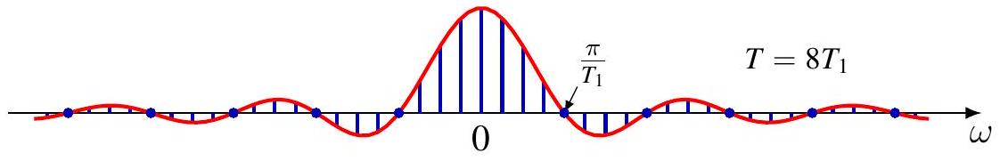
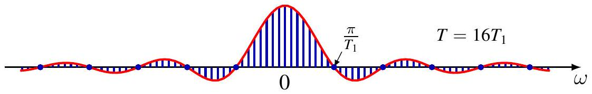
- 离散频率间隔为 \(\omega_k = k\frac{2\pi}{T}\)
- 图中展示了三种情况：
- \(T = 4T_1\)
- \(T = 8T_1\)
- \(T = 16T_1\)
- 第一个零点位于 \(\frac{\pi}{T_1}\)
结论： 随着 \(T \to \infty\)，离散频率的采样变得越来越密集。
动机示例：周期方波
当 \(T \to \infty\) 时，\(x_T(t) \to x(t) \triangleq u(t + \frac{T_1}{2}) - u(t - \frac{T_1}{2})\)，即矩形脉冲 。
\[ \begin{aligned} x_T(t) &= \sum_{k=-\infty}^{\infty} \hat{x}_T[k] e^{j\omega_k t} = \sum_{k=-\infty}^{\infty} \frac{1}{T} X(j\omega_k) e^{j\omega_k t} & (T\hat{x}[k] = X(j\omega_k)) \\ &= \sum_{k=-\infty}^{\infty} \frac{\omega_0}{2\pi} X(j\omega_k) e^{j\omega_k t} & (\omega_0 = \frac{2\pi}{T}) \\ &= \frac{1}{2\pi} \sum_{k=-\infty}^{\infty} X(j\omega_k) e^{j\omega_k t} \Delta\omega & (\Delta\omega = \omega_0) \\ &\to \frac{1}{2\pi} \int_{-\infty}^{\infty} X(j\omega) e^{j\omega t} d\omega & (\Delta\omega = \omega_0 \to 0) \end{aligned} \]
因此：
\[ x(t) = \frac{1}{2\pi} \int_{-\infty}^{\infty} X(j\omega) e^{j\omega t} d\omega \]
动机示例：周期方波
对于包络线 \(X(j\omega)\) ，
\[ \begin{aligned} X(j\omega_k) &= T\hat{x}_T[k] \\ &= \int_{-T/2}^{T/2} x_T(t)e^{-j\omega_k t} dt \\ &= \int_{-T/2}^{T/2} x(t)e^{-j\omega_k t} dt \quad (在 |t| \le T/2 时，x_T(t) = x(t)) \\ &= \int_{-\infty}^{\infty} x(t)e^{-j\omega_k t} dt \quad (在 |t| > T/2 时，x(t) = 0) \end{aligned} \]
所以，
\[ X(j\omega) = \int_{-\infty}^{\infty} x(t)e^{-j\omega t} dt \]
动机示例：周期方波
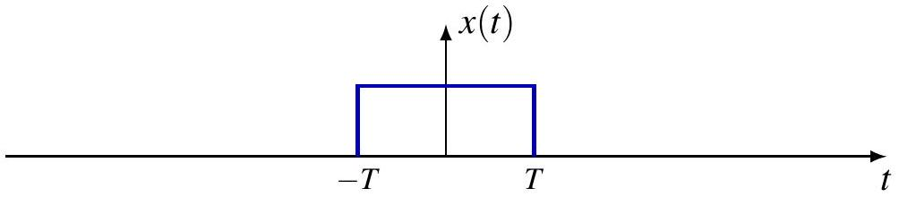


非周期信号的连续时间傅里叶变换 (CTFT)
对于一个支撑集为 \(\text{supp } x \subset [-T_1, T_1]\) 的非周期信号 \(x\)，定义周期为 \(T > 2T_1\) 的周期延拓信号：
\[x_T(t) = \sum_{k=-\infty}^{\infty} x(t - kT)\]
那么
\[x(t) = x_T(t), \quad |t| < \frac{T}{2}\]
当 \(T \to \infty\) 时，
\[x_T(t) \to x(t), \quad \forall t \in \mathbb{R}\]
\(x_T\) 具有傅里叶级数表示：
\[x_T(t) = \sum_{k=-\infty}^{\infty} \hat{x}_T[k]e^{jk\omega_0 t}, \quad \omega_0 = \frac{2\pi}{T}\]
非周期信号的连续时间傅里叶变换
定义：
\[ X(j\omega) = \int_{-\infty}^{\infty} x(t)e^{-j\omega t} dt \]
\(X(j\omega)\) 是 \(T\hat{x}_T[k]\) 的包络线，
\[ \begin{aligned} \hat{x}_T[k] &= \frac{1}{T} \int_{-\frac{T}{2}}^{\frac{T}{2}} x_T(t)e^{-jk\omega_0 t} dt = \frac{1}{T} \int_{-\frac{T}{2}}^{\frac{T}{2}} x(t)e^{-jk\omega_0 t} dt \\ &= \frac{1}{T} \int_{-\infty}^{\infty} x(t)e^{-jk\omega_0 t} dt = \frac{1}{T} X(jk\omega_0) = \frac{\omega_0}{2\pi} X(jk\omega_0) \end{aligned} \]
所以：
\[ \begin{aligned} x(t) &= \lim_{T \to \infty} x_T(t) = \lim_{T \to \infty} \sum_{k=-\infty}^{\infty} \frac{\omega_0}{2\pi} X(jk\omega_0)e^{jk\omega_0 t} \\ &= \frac{1}{2\pi} \int_{-\infty}^{\infty} X(j\omega)e^{j\omega t} d\omega \end{aligned} \]
连续时间傅里叶变换对
傅里叶变换（分析方程） ： \[X(j\omega) = \mathcal{F}(x)(j\omega) = \int_{-\infty}^{\infty} x(t) e^{-j\omega t} dt\] * \(X(j\omega)\) 被称为 \(x(t)\) 的频谱 [cite: 500]。
逆傅里叶变换（综合方程） ： \[x(t) = \mathcal{F}^{-1}(X)(t) = \frac{1}{2\pi} \int_{-\infty}^{\infty} X(j\omega) e^{j\omega t} d\omega\] [cite: 502] * 这是在连续频率上的复指数信号的叠加；
- 频率 \(\omega\) 具有“幅度” \(X(j\omega) \frac{d\omega}{2\pi}\) 。
CT 傅里叶变换定义
傅里叶变换 (分析方程)
\[ X(j \omega)=\mathcal{F}\{x\}(j \omega)=\int_{-\infty}^{\infty} x(t) e^{-j \omega t} d t \]
\(X(j \omega)\) 称为 \(x(t)\) 的频谱 (spectrum)。
傅里叶逆变换 (综合方程)
\[ x(t)=\mathcal{F}^{-1}\{X\}(t)=\frac{1}{2 \pi} \int_{-\infty}^{\infty} X(j \omega) e^{j \omega t} d \omega \]
这表示在连续频率范围内的复指数信号的叠加；频率 \(\omega\) 处的“密度”为 \(\frac{1}{2 \pi} X(j \omega)\)。
等价表示与应用
同一信号的两种等价表示：
- 时域 vs. 频域：\(x(t) \stackrel{\mathcal{F}}{\longleftrightarrow} X(j \omega)\)
其他领域的应用：
概率论：具有密度函数 \(p(x)\) 的随机变量 \(X\) 的特征函数 \[ \varphi_{X}(t)=\mathbb{E}\left[e^{j t X}\right]=\int_{-\infty}^{\infty} p(x) e^{j x t} d x \]
量子力学：
- 位置表示：波函数 \(\psi(x)\)（\(|\psi(x)|^{2}\) 是在位置 \(x\) 发现粒子的概率密度）
- 动量表示：\(\Psi(p)\) \[ \Psi(p)=\frac{1}{\sqrt{2 \pi \hbar}} \int_{-\infty}^{\infty} \psi(x) e^{-j p x / \hbar} d x \]
- \(|\Psi(p)|^{2}\) 是发现具有动量 \(p\) 的粒子的概率密度
\(L_{1}\) 信号的定义
回顾微积分，对于实值函数 \(x\)，广义积分定义为：
\[ \int_{\mathbb{R}} x(t) d t \triangleq \lim _{T_{1}, T_{2} \rightarrow \infty} \int_{-T_{1}}^{T_{2}} x(t) d t \]
如果 \(x \in L_{1}(\mathbb{R})\)，即 \(\|x\|_{1}=\int_{\mathbb{R}}|x(t)| d t<\infty\)，则该积分是定义良好 (well-defined) 的。 对于复值函数 \(x=u+j v\) 同样适用，因为 \(|u|,|v| \leq|x|\)。
对于信号 \(x \in L_{1}(\mathbb{R})\)： - \(x(t) e^{-j \omega t} \in L_{1}(\mathbb{R})\)，因为 \(\left|x(t) e^{-j \omega t}\right|=|x(t)|\)。 - 对于每个 \(\omega\)，傅里叶变换 \(X(j \omega)\) 都是定义良好的广义积分。
\(L_{1}\) 信号傅里叶变换的性质
定理：如果 \(x \in L_{1}\)，则 \(X\) 是有界的，实际上 \(\|X\|_{\infty} \leq\|x\|_{1}\)。
引理：对于实变量 \(t\) 的复值函数 \(f\)， \[ \left|\int f(t) d t\right| \leq \int|f(t)| d t \] 证明：若右边为 \(\infty\) 则显然。假设有限。令积分的相位为 \(\phi\)，即 \(\int f(t) d t=\left|\int f(t) d t\right| e^{j \phi}\)。 \[ \left|\int f(t) d t\right|=e^{-j \phi} \int f(t) d t=\int e^{-j \phi} f(t) d t \] 取实部： \[ \left|\int f(t) d t\right|=\operatorname{Re} \int e^{-j \phi} f(t) d t=\int \operatorname{Re}\left[e^{-j \phi} f(t)\right] d t \leq \int\left|e^{-j \phi} f(t)\right| d t \]
定理：如果 \(x \in L_{1}\)，则 \(X\) 是一致连续 (uniformly continuous) 的。 (证明利用三角不等式和 \(L_1\) 积分的性质)
例子：右边衰减指数信号
\[ x(t)=e^{-a t} u(t), \quad a>0 \]
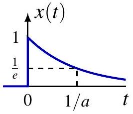
\[ \begin{aligned} X(j \omega) & =\int_{0}^{\infty} e^{-(a+j \omega) t} d t \\ & =-\left.\frac{1}{a+j \omega} e^{-(a+j \omega) t}\right|_{0} ^{\infty}=\frac{1}{a+j \omega} \end{aligned} \]
(注：该公式也适用于实部 \(\operatorname{Re} a>0\) 的复数 \(a\))
对于 \(a>0\)： \[ |X(j \omega)|=\frac{1}{\sqrt{a^{2}+\omega^{2}}}, \quad \arg X(j \omega)=-\arctan \frac{\omega}{a} \]
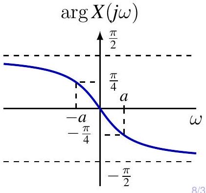
例子：双边衰减指数信号
\[ x(t)=e^{-a|t|}, \quad a>0 \]
\[ \begin{aligned} X(j \omega) & =\int_{-\infty}^{\infty} e^{-a|t|} e^{-j \omega t} d t \\ & =\int_{-\infty}^{0} e^{(a-j \omega) t} d t+\int_{0}^{\infty} e^{-(a+j \omega) t} d t \\ & =\frac{1}{a-j \omega}+\frac{1}{a+j \omega}=\frac{2 a}{a^{2}+\omega^{2}} \end{aligned} \]
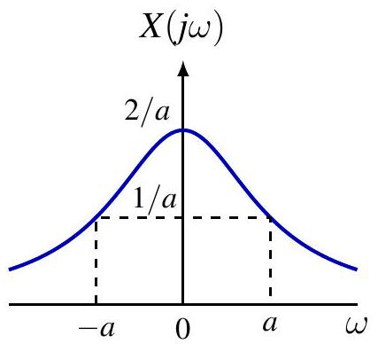
例子：高斯信号 (Gaussian)
对于 \(a>0\)，
\[ x(t)=e^{-a t^{2}} \stackrel{\mathcal{F}}{\longleftrightarrow} X(j \omega)=\sqrt{\frac{\pi}{a}} e^{-\frac{\omega^{2}}{4 a}} \]
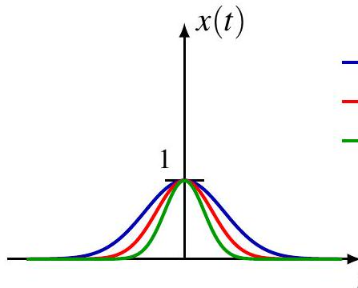
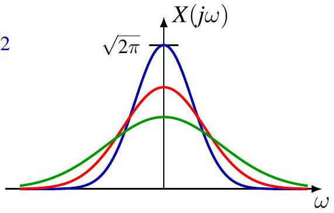
特别地，如果 \(a=1/2\)： \[ x(t)=e^{-\frac{1}{2} t^{2}} \stackrel{\mathcal{F}}{\longleftrightarrow} X(j \omega)=\sqrt{2 \pi} e^{-\frac{1}{2} \omega^{2}} \] 即高斯函数是傅里叶变换的特征函数。
高斯信号变换证明
利用微分方程和分部积分证明：
\[ \begin{aligned} \frac{d}{d \omega} X(j \omega) & =\int_{-\infty}^{\infty} e^{-a t^{2}}(-j t) e^{-j \omega t} d t=\frac{j}{2 a} \int_{-\infty}^{\infty}\left(\frac{d}{d t} e^{-a t^{2}}\right) e^{-j \omega t} d t \\ &=-\frac{j}{2 a} \int_{-\infty}^{\infty} e^{-a t^{2}}\left(\frac{d}{d t} e^{-j \omega t}\right) d t \quad \text { (分部积分) } \\ &=-\frac{\omega}{2 a} X(j \omega) \end{aligned} \]
解微分方程 \(\frac{d}{d \omega} X(j \omega)=-\frac{\omega}{2 a} X(j \omega)\) 并利用 \(X(0)=\sqrt{\pi/a}\) 可得结果。
\(L_{1}\) 信号的傅里叶逆变换
给定 \(X(j\omega)\)，逆变换是否等于 \(x(t)\)？
\[ x(t) \stackrel{?}{=} \mathcal{F}^{-1}\{X\}(t)=\frac{1}{2 \pi} \int_{-\infty}^{\infty} X(j \omega) e^{j \omega t} d \omega \]
定理：如果 \(x \in L_{1}(\mathbb{R})\) 是连续的，且 \(X=\mathcal{F}\{x\} \in L_{1}(\mathbb{R})\)，那么 \(x=\mathcal{F}^{-1}\{X\}\)。 - 例如：双边衰减指数，高斯信号。
注意：对于 \(x \in L_1\)，其变换 \(X\) 不一定属于 \(L_1\)。 - 例如：单边衰减指数，矩形脉冲。
主值积分：通常将逆变换解释为柯西主值 (Principal Value)： \[ \lim _{W \rightarrow \infty} \frac{1}{2 \pi} \int_{-W}^{W} X(j \omega) e^{j \omega t} d \omega \]
狄利克雷定理：如果 \(x \in L_1\) 且满足狄利克雷条件，逆变换收敛于 \(\frac{x\left(t_{+}\right)+x\left(t_{-}\right)}{2}\)（吉布斯现象）。
例子：矩形脉冲 (Rectangular Pulse)
\[ x(t)=u(t+T)-u(t-T) \]
\[ X(j \omega)=\int_{-T}^{T} e^{-j \omega t} d t=\frac{2 \sin (\omega T)}{\omega} \]
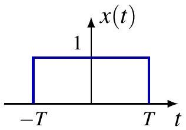
当 \(T \rightarrow \infty\) 时： - 频域：\(\frac{\sin (\omega T)}{\pi \omega} \rightarrow \delta(\omega)\) - 时域：\(x(t) \rightarrow 1\) (直流信号)
定义 Sinc 函数：\(\operatorname{sinc}(\theta) \triangleq \frac{\sin (\pi \theta)}{\pi \theta}\)
例子：理想低通滤波器
频率响应： \[ H(j \omega)=u\left(\omega+\omega_{c}\right)-u\left(\omega-\omega_{c}\right) \]
冲激响应（逆变换）： \[ h(t)=\frac{1}{2 \pi} \int_{-\omega_{c}}^{\omega_{c}} e^{j \omega t} d \omega=\frac{\sin \left(\omega_{c} t\right)}{\pi t} \]
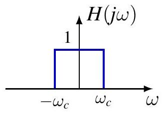
注意：\(h(t) \notin L_{1}(\mathbb{R})\) 但 \(H(j \omega) \in L_{1}(\mathbb{R})\)。
当 \(\omega_{c} \rightarrow \infty\) 时， - 时域：\(h(t) \rightarrow \delta(t)\) - 频域：\(H(j \omega) \rightarrow 1\)（通过所有频率）
对偶性 (Duality)
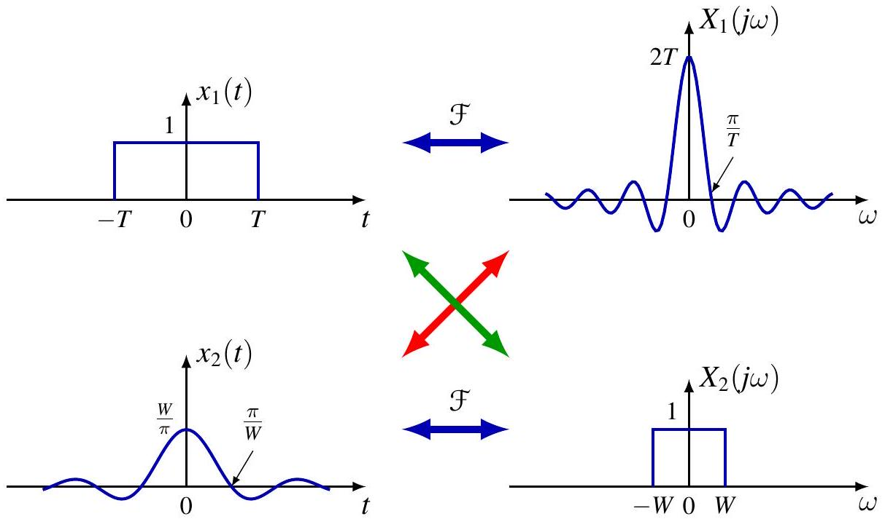
- 时间脉冲 \(\leftrightarrow\) 频域 Sinc
- 时间 Sinc \(\leftrightarrow\) 频域脉冲 (低通滤波器)
广义傅里叶变换定义
如果 \(x_n \rightarrow x\)，定义 \(x\) 的傅里叶变换为： \[ X(j \omega)=\mathcal{F}\{x\} \triangleq \lim _{n} \mathcal{F}\left\{x_{n}\right\} \]
更正式地，基于分布/广义函数理论，对于测试函数 \(\phi\)： \[ \int_{\mathbb{R}} X(j \omega) \phi(\omega) d \omega=\int_{\mathbb{R}} x(t) \Phi(j t) d t \]
施瓦兹空间 (Schwarz Space) \(\mathcal{S}\)： - 无穷可微且速降 (rapidly decreasing) 的函数空间。 - 例如：高斯函数 \(g(t)=e^{-a t^{2}} \in \mathcal{S}\)。 - 性质：\(\phi \in \mathcal{S} \Longrightarrow \Phi \in \mathcal{S}\)。
例子：单位冲激 \(\delta\)
方法 1：作为理想低通滤波器的极限。 \[ h_{W}(t)=\frac{\sin (W t)}{\pi t} \stackrel{\mathcal{F}}{\longleftrightarrow} H_{W}(j \omega)=u(\omega+W)-u(\omega-W) \] 当 \(W \rightarrow \infty\)，\(h_W \to \delta\)，且 \(H_W \to 1\)。 \[ \therefore \mathcal{F}\{\delta\}=1 \]
方法 2：使用广义定义。 \[ \int_{\mathbb{R}} X(j \omega) \phi(\omega) d \omega=\int_{\mathbb{R}} \delta(t) \Phi(j t) d t=\Phi(0)=\int_{\mathbb{R}} 1 \cdot \phi(\omega) d \omega \] 因此 \(X(j\omega)=1\)。 \(\delta\) 具有白色频谱 (white spectrum)，包含等量的所有频率。
例子：直流信号 1
方法 1：作为矩形脉冲的极限。 \[ x_{T}(t) \longleftrightarrow X_{T}(j \omega)=\frac{2 \sin (\omega T)}{\omega} \] 当 \(T \rightarrow \infty\)，\(x_T \to 1\)，且 \(X_T \to 2\pi\delta(\omega)\)。 \[ \therefore \mathcal{F}\{1\}=2 \pi \delta(\omega) \]
方法 2：使用广义定义。 \[ \int_{\mathbb{R}} X(j \omega) \phi(\omega) d \omega=\int_{\mathbb{R}} 1 \cdot \Phi(j t) d t=2 \pi \phi(0)=\int_{\mathbb{R}} 2 \pi \delta(\omega) \phi(\omega) d \omega \] 直流信号的频谱是零频率处的冲激！
例子：复指数信号
令 \(x(t)=e^{j \omega_{0} t}\)。
\[ \begin{aligned} \int_{\mathbb{R}} X(j \omega) \phi(\omega) d \omega & =\int_{\mathbb{R}} e^{j \omega_{0} t} \Phi(j t) d t=2 \pi \phi\left(\omega_{0}\right) \\ & =\int_{\mathbb{R}} 2 \pi \delta\left(\omega-\omega_{0}\right) \phi(\omega) d \omega \end{aligned} \]
因此： \[ \mathcal{F}\{e^{j \omega_{0} t}\} = 2 \pi \delta\left(\omega-\omega_{0}\right) \]
\(e^{j \omega_{0} t}\) 的频谱是 \(\omega_{0}\) 处的冲激。 这可以解释为 \(e^{j \omega t}\) 的正交性： \[ X(j \omega)=\left\langle x, e^{j \omega t}\right\rangle \]
周期信号的傅里叶变换
周期信号的频谱
基频为 \(\omega_0\) 的周期信号具有傅里叶级数： \[ x(t)=\sum_{k=-\infty}^{\infty} \hat{x}[k] e^{j k \omega_{0} t} \]
利用线性和复指数的变换： \[ \begin{aligned} X(j \omega) & =\mathcal{F}\left\{\sum_{k=-\infty}^{\infty} \hat{x}[k] e^{j k \omega_{0} t}\right\} \\ & =\sum_{k=-\infty}^{\infty} \hat{x}[k] \mathcal{F}\left\{e^{j k \omega_{0} t}\right\} \\ & =\sum_{k=-\infty}^{\infty} 2 \pi \hat{x}[k] \delta\left(\omega-k \omega_{0}\right) \end{aligned} \]
结论：周期信号的频谱由谐波相关频率处的冲激组成！冲激的面积是 \(2\pi\) 乘以傅里叶级数系数。
例子：正弦和余弦
余弦：\(x(t) = \cos(\omega_0 t) = \frac{1}{2} e^{j \omega_{0} t}+\frac{1}{2} e^{-j \omega_{0} t}\) \[ X(j \omega) = \pi \delta\left(\omega-\omega_{0}\right)+\pi \delta\left(\omega+\omega_{0}\right) \]
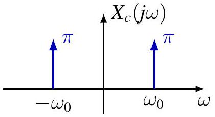
正弦：\(x(t) = \sin(\omega_0 t) = \frac{1}{2j} e^{j \omega_{0} t}-\frac{1}{2j} e^{-j \omega_{0} t}\) \[ X(j \omega) = \frac{\pi}{j} \delta\left(\omega-\omega_{0}\right)-\frac{\pi}{j} \delta\left(\omega+\omega_{0}\right) \]
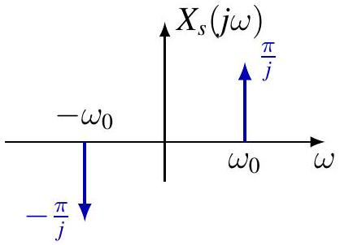
例子：周期冲激串
\[ x(t)=\sum_{k=-\infty}^{\infty} \delta(t-k T) \]
傅里叶系数 \(\hat{x}[k] = 1/T\)。 傅里叶变换：
\[ X(j \omega)=\sum_{k=-\infty}^{\infty} \frac{2 \pi}{T} \delta\left(\omega-k \frac{2 \pi}{T}\right) \]
时域中的冲激串 \(\longleftrightarrow\) 频域中的冲激串。
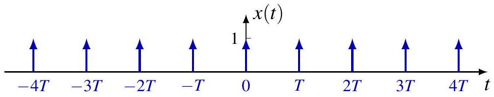
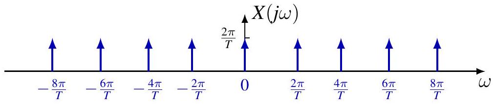
目录
2. 连续时间傅里叶变换的性质
回顾：\(L_1(\mathbb{R})\) 函数的傅里叶变换
作为主值（Principal values）的傅里叶变换及其逆变换：
\[ \mathcal{F}\{x\}(j\omega) = \lim_{T \to \infty} \int_{-T}^{T} x(t)e^{-j\omega t} dt \]
\[ \mathcal{F}^{-1}(X)(t) = \lim_{W \to \infty} \frac{1}{2 \pi} \int_{-W}^{W} X(j\omega)e^{j\omega t} d\omega \]
定理（点向逆变换 Pointwise inversion）
如果 \(x \in L_1(\mathbb{R})\) 在所有有限区间上均满足狄里赫利（Dirichlet）条件，则： \[(\mathcal{F}^{-1} \circ \mathcal{F}\{x\})(t) = \frac{x(t_+) + x(t_-)}{2}, \quad \forall t\]
如果 \(X \in L_1(\mathbb{R})\) 在所有有限区间上均满足狄里赫利（Dirichlet）条件，则： \[(\mathcal{F} \circ \mathcal{F}^{-1}\{X\})(j\omega) = \frac{X(j\omega_+) + X(j\omega_-)}{2}, \quad \forall \omega\]
如果 \(x \in C(\mathbb{R}) \cap L_1(\mathbb{R})\) 且 \(\mathcal{F}\{x\} \in L_1(\mathbb{R})\)，那么： \[\mathcal{F}^{-1} \circ \mathcal{F}\{x\} = x\]
回顾: \(L_1(\mathbb{R})\) 函数的傅里叶变换
傅里叶变换对
| case | \(x(t)\) | \(X(j \omega)\) |
|---|---|---|
| 1 | \(e^{-a t} u(t), \quad \operatorname{Re} a>0\) | \(\frac{1}{a+j \omega}\) |
| 3 | \(e^{-a\|t\|}, \quad \operatorname{Re} a>0\) | \(\frac{2 a}{a^{2}+\omega^{2}}\) |
| 3 | \(e^{-a t^{2}}, \quad a>0\) | \(\sqrt{\frac{\pi}{a}} e^{-\frac{\omega^{2}}{4 a}}\) |
| 1 | \(u(t+T)-u(t-T)\) | \(\frac{2 \sin (\omega T)}{\omega}\) |
| 2 | \(\frac{\sin \left(\omega_{c} t\right)}{\pi t}\) | \(u\left(\omega+\omega_{c}\right)-u\left(\omega-\omega_{c}\right)\) |
回顾: 广义函数的傅里叶变换
施瓦茨空间 (Schwartz space) \(\mathcal{S} = \mathcal{S}(\mathbb{R})\)，即快速递减函数空间：
\[\mathcal{S} = \{ \phi \in C^\infty(\mathbb{R}) : \|\phi\|_{\ell,k} < \infty, \forall \ell, k \in \mathbb{N} \}\]
其中 \(\|\phi\|_{\ell,k} = \sup_{t \in \mathbb{R}} |t^\ell \phi^{(k)}(t)|\)。注意 \(\mathcal{F}\{\mathcal{S}\} = \mathcal{S}\)。
缓增广义函数 (Tempered distributions) 的傅里叶变换定义如下：
\[(x, \phi) \triangleq \int_{\mathbb{R}} x(\xi)\phi(\xi)d\xi\]
- 如果在广义函数意义下 \(x_n \to x\)，那么其傅里叶变换定义为：\(\mathcal{F}\{x\} \triangleq \lim_{n} \mathcal{F}\{x_n\}\)（广义函数意义下）。
\[(x, \phi) = \lim_{n} (x_n, \phi) \Longrightarrow (\mathcal{F}\{x\}, \phi) \triangleq \lim_{n} (\mathcal{F}\{x_n\}, \phi), \quad \forall \phi \in \mathcal{S}\]
- 或者，另一种等价定义为： \[(\mathcal{F}\{x\}, \phi) \triangleq (x, \mathcal{F}\{\phi\}), \quad \forall \phi \in \mathcal{S}\]
回顾: 广义函数的傅里叶变换
傅里叶变换对
| \(x(t)\) | \(X(j \omega)\) |
|---|---|
| \(\delta(t)\) | 1 |
| \(\delta\left(t-t_{0}\right)\) | \(e^{-j \omega t_{0}}\) |
| 1 | \(2 \pi \delta(\omega)\) |
| \(e^{j \omega_{0} t}\) | \(2 \pi \delta\left(\omega-\omega_{0}\right)\) |
\[ \begin{gathered} \int_{\mathbb{R}} \delta\left(t-t_{0}\right) e^{-j \omega t} d t=e^{-j \omega t_{0}}, \quad \int_{\mathbb{R}} e^{j\left(\omega_{1}-\omega_{2}\right) t} d t=2 \pi \delta\left(\omega_{1}-\omega_{2}\right) \\ \int_{\mathbb{R}} X(j \omega) e^{j \omega t} d \omega=\int_{\mathbb{R}} \int_{\mathbb{R}} x(\tau) e^{j \omega(t-\tau)} d \tau d \omega=\int_{\mathbb{R}} x(\tau) 2 \pi \delta(t-\tau) d \tau=2 \pi x(t) \end{gathered} \]
回顾: Fourier Transform for Periodic Functions
傅里叶级数 (Fourier series)
\[x(t) = \sum_{k=-\infty}^{\infty} \hat{x}[k]e^{jk\omega_0 t}\]
傅里叶变换 (Fourier transform)
\[X(j\omega) = \sum_{k=-\infty}^{\infty} 2\pi\hat{x}[k]\delta(\omega - k\omega_0)\]
等价表示 (Equivalent representation)
- \(\hat{x}[k]\) 是在 \(\omega_k = k\omega_0\) 处分量的幅度。
- \(\hat{x}[k]\delta(\omega - k\omega_0)\) 是在 \(\omega_k = k\omega_0\) 处分量的密度。
类比：概率论中的离散随机变量 \(x\) (Cf. discrete random variable \(x\) in probability)
\[\mathbb{E}f(X) = \sum_{n} f(x_n)p_n = \int_{\mathbb{R}} f(x)p(x)dx\]
其中概率密度函数定义为： \[p(x) = \sum_{n} p_n\delta(x - x_n)\]
回顾: 傅里叶级数与傅里叶变换的关系
- 非周期信号 \(x\) 具有长度小于 \(T\) 的有限支撑集
- \(x\) 的周期延拓为 \(x_T\) [cite: 481]：
\[x_T(t) = \sum_{k=-\infty}^{\infty} x(t - kT)\]
注意： 换句话说，\(x\) 是周期信号 \(x_T\) 的一个周期。
变换关系汇总
非周期信号 \(x\) 的傅里叶变换 (\(\mathcal{F}\))： \[\hat{x}_T[k] = \frac{1}{T} X(jk\omega_0)\]
周期信号 \(x_T\) 的傅里叶级数 (\(\mathcal{FS}\))： \[X_T(j\omega) = \sum_{k=-\infty}^{\infty} 2\pi \hat{x}_T[k] \delta(\omega - k\omega_0)\]
周期信号 \(x_T\) 的傅里叶变换 (\(\mathcal{F}\))： \[X_T = \sum_{k=-\infty}^{\infty} \omega_0 X(jk\omega_0) \delta(\omega - k\omega_0)\]
连续时间傅里叶变换的性质
线性
\[ \mathcal{F}\{a x+b y\}=a \mathcal{F}\{x\}+b \mathcal{F}\{y\} \]
时移
\[ \mathcal{F}\left\{\tau_{t_{0}} x\right\}=E_{-t_{0}} \mathcal{F}\{x\} \quad \text { or } \quad x\left(t-t_{0}\right) \stackrel{\mathcal{F}}{\longleftrightarrow} e^{-j \omega t_{0}} X(j \omega) \]
其中 \(\left(E_{a} f\right)(s)=e^{j a s} f(s)\) 证明。
\[ \int_{\mathbb{R}} x\left(t-t_{0}\right) e^{-j \omega t} d t=\int_{\mathbb{R}} x(s) e^{-j \omega\left(s+t_{0}\right)} d s=e^{-j \omega t_{0}} \int_{\mathbb{R}} x(s) e^{-j \omega s} d s \]
频移
\[ \mathcal{F}\left\{E_{\omega_{0}} x\right\}=\tau_{\omega_{0}} \hat{x} \quad \text { or } \quad e^{j \omega_{0} t} x(t) \stackrel{\mathcal{F}}{\longleftrightarrow} X\left(j\left(\omega-\omega_{0}\right)\right) \]
例: 多径效应
发送端 (Transmitter)：\(x(t)\)
接收端 (Receiver)：\(y(t) = a_0x(t) + a_1x(t - \tau)\)
\[ \begin{aligned} Y(j \omega) & =a_{0} X(j \omega)+a_{1} e^{-j \omega \tau} X(j \omega) \\ & =\left(a_{0}+a_{1} e^{-j \omega \tau}\right) X(j \omega) \end{aligned} \]
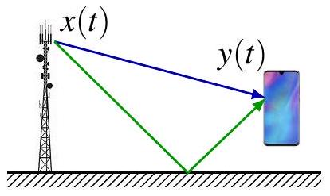
令 \(x(t)=u(t+T)-u(t-T)\).
\[ X(j \omega)=\frac{2 \sin (\omega T)}{\omega} \]
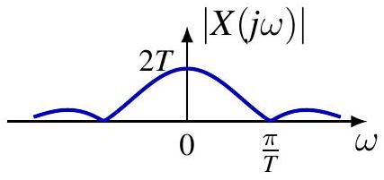
\[ Y(j \omega)=\left(a_{0}+a_{1} e^{-j \omega \tau}\right) \frac{2 \sin (\omega T)}{\omega} \]
对于 \(a_{0}=a_{1}=1\),
\[ Y(j \omega)=4 e^{-j \omega \tau / 2} \cos \left(\frac{\omega \tau}{2}\right) \frac{\sin (\omega T)}{\omega} \]
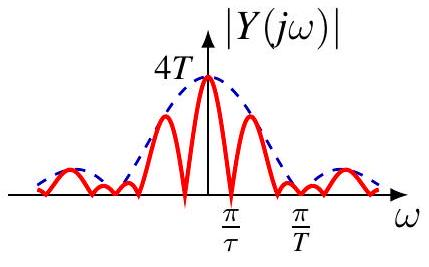
例: 调制
基带信号 (Baseband signal)：\(x(t)\)
已调信号 (Modulated signal)：通常表示为 \(y(t)\) 或 \(s(t)\)
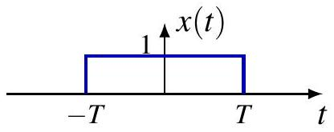
\[ \begin{aligned} & y(t)=x(t) \cos \left(\omega_{c} t\right)=\frac{1}{2} x(t)\left(e^{j \omega_{c} t}+e^{-j \omega_{c} t}\right) \\ & Y(j \omega)=\frac{1}{2} X\left(j\left(\omega-\omega_{c}\right)\right)+\frac{1}{2} X\left(j\left(\omega+\omega_{c}\right)\right) \end{aligned} \]
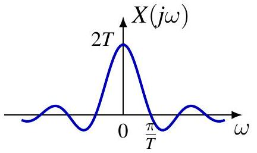
对于 \(x(t)=u(t+T)-u(t-T)\),
\[ Y(j \omega)=\frac{\sin \left(\left(\omega-\omega_{c}\right) T\right)}{\omega-\omega_{c}}+\frac{\sin \left(\left(\omega+\omega_{c}\right) T\right)}{\omega+\omega_{c}} \]
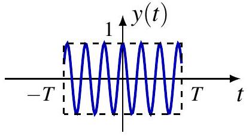
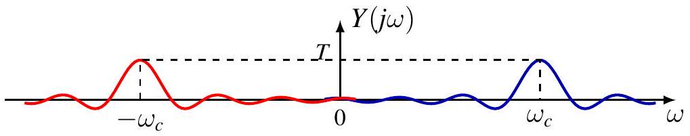
连续时间傅里叶变换的性质
时间反转
\[ \mathcal{F}\{R x\}=R \mathcal{F}\{x\} \quad \text { or } \quad x(-t) \stackrel{\mathcal{F}}{\longleftrightarrow} X(-j \omega) \]
共轭
\[ \mathcal{F}\left\{x^{*}\right\}=R \overline{\mathcal{F}\{x\}} \quad \text { or } \quad x^{*}(t) \stackrel{\mathcal{F}}{\longleftrightarrow} X^{*}(-j \omega) \]
证明：
\(\mathcal{F} \{x^*\}(j\omega) = \int_{\mathbb{R}} x^*(t)e^{-j\omega t} dt = \left( \int_{\mathbb{R}} x(t)e^{j\omega t} dt \right)^* = X^*(-j\omega)\) 对称性
- \(x\) 为偶函数 \(\iff X\) 为偶函数； \(x\) 为奇函数 \(\iff X\) 为奇函数
- \(x\) 为实信号 \(\iff X(-j\omega) = X^*(j\omega)\)（共轭对称性）
- \(x\) 为实且偶 \(\iff X\) 为实且偶
- \(x\) 为实且奇 \(\iff X\) 为纯虚且奇
例
对于 \(a>0\),
\[ x(t)= \begin{cases}e^{-a t}, & t>0 \\ -e^{a t}, & t<0\end{cases} \]
令 \(y(t)=e^{-a t} u(t)\), 而且
\[ Y(j \omega)=\frac{1}{a+j \omega} \]
由于 \(x(t)=y(t)-y(-t)\).
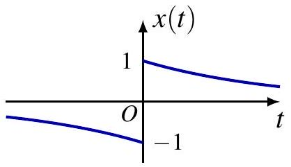
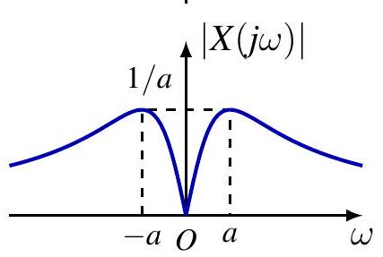
\[ \begin{aligned} X(j \omega) & =Y(j \omega)-Y(-j \omega) \\ & =\frac{1}{a+j \omega}-\frac{1}{a-j \omega}=\frac{-2 j \omega}{a^{2}+\omega^{2}} \end{aligned} \]
\(x\) 为实且奇 \(\iff X\) 为纯虚且奇
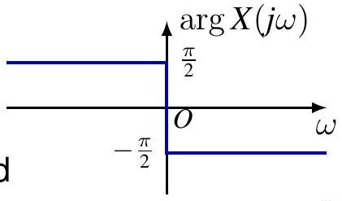
时间与频率尺度变换
对于 \(a \neq 0\),
\[ \mathcal{F}\left\{S_{a} x\right\}=\frac{1}{|a|} S_{\frac{1}{a}} \mathcal{F}\{x\} \quad \text { or } \quad x(a t) \stackrel{\mathcal{F}}{\longleftrightarrow} \frac{1}{|a|} X\left(\frac{j \omega}{a}\right) \]
证明。通过变量替换 \(\tau = at\)。
对于 \(a > 0\)：
\[ \int_{-\infty}^{\infty} x(at)e^{-j\omega t} dt = \int_{-\infty}^{\infty} x(\tau)e^{-j\frac{\omega}{a}\tau} \frac{d\tau}{a} = \frac{1}{a} X\left( \frac{j\omega}{a} \right) \]
对于 \(a < 0\)：
\[ \int_{-\infty}^{\infty} x(at)e^{-j\omega t} dt = \int_{\infty}^{-\infty} x(\tau)e^{-j\frac{\omega}{a}\tau} \frac{d\tau}{a} = -\frac{1}{a} X\left( \frac{j\omega}{a} \right) \]
时间与频率尺度变换
\[ \mathcal{F}\left\{S_{a} x\right\}=\frac{1}{|a|} S_{\frac{1}{a}} \mathcal{F}\{x\} \quad \text { or } \quad x(a t) \stackrel{\mathcal{F}}{\longleftrightarrow} \frac{1}{|a|} X\left(\frac{j \omega}{a}\right) \]
傅里叶变换的尺度变换性质体现了时域与频域之间的倒数关系：
- 时域压缩 \(\Longrightarrow\) 频域扩展： 当 \(|a| > 1\) 时，信号在时间轴上变窄（压缩），其频谱在频率轴上变宽（扩展），且幅度下降 。
- 时域扩展 \(\Longrightarrow\) 频域压缩： 当 \(|a| < 1\) 时，信号在时间轴上变宽（拉伸），其频谱在频率轴上变窄（集中），幅度上升 。
音频实例： * 播放速度加快（时域压缩）：信号在时间上被压缩（\(a > 1\)），导致频率分量向高频移动，因此听起来音调变高（Higher pitch）。 * 播放速度放慢（时域扩展）：信号在时间上被拉伸（\(a < 1\)），导致频率分量向低频压缩，因此听起来音调变低（Lower pitch）。
\[ x(t)=e^{-(a t)^{2}} \stackrel{\mathcal{F}}{\longleftrightarrow} X(j \omega)=\frac{\sqrt{\pi}}{|a|} e^{-\frac{1}{4}\left(\frac{\omega}{a}\right)^{2}} \]
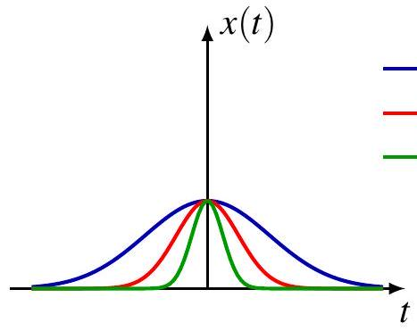
\(a=1 / 2\) \(a=1\) \(a=2\)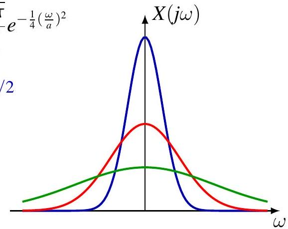
微分
\[ x^{\prime}(t) \stackrel{\mathcal{F}}{\longleftrightarrow} j \omega X(j \omega), \quad x^{(k)}(t) \stackrel{\mathcal{F}}{\longleftrightarrow}(j \omega)^{k} X(j \omega) \]
证明：积分符号下求导 (Differentiate under integral sign)
利用逆傅里叶变换（合成方程）： \[x(t) = \frac{1}{2\pi} \int_{\mathbb{R}} X(j\omega)e^{j\omega t} d\omega \Longrightarrow x'(t) = \frac{1}{2\pi} \int_{\mathbb{R}} j\omega X(j\omega)e^{j\omega t} d\omega\]
由此可见，时域中的求导操作对应于频域中乘以 \(j\omega\)。
微分器及其频率响应
\(y = x'\) 是一个微分器的输出，该系统的频率响应为：
\[H(j\omega) = \mathcal{F} \{\delta'\} (j\omega) = \int_{\mathbb{R}} \delta'(t)e^{-j\omega t} dt = -\left. \frac{d}{dt} e^{-j\omega t} \right|_0 = j\omega\]
滤波器特性分析
根据关系式 \(Y(j\omega) = H(j\omega)X(j\omega)\)，微分器具有以下滤波特性：
- 放大高频分量：由于 \(|H(j\omega)| = |\omega|\)，随着频率 \(\omega\) 增加，增益线性增加。
- 抑制低频分量：频率越低，增益越小。
- 完全消除直流 (DC) 分量：在 \(\omega = 0\) 处，\(H(j0) = 0\)，因此信号中的常数部分会被完全滤除。
总结
微分器本质上是一个高通滤波器。它对信号中的突变（高频）非常敏感，常用于边缘检测；但同时也会放大信号中的高频噪声。
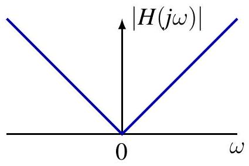
积分
\[ y(t)=\int_{-\infty}^{t} x(\tau) d \tau \stackrel{\mathcal{F}}{\longleftrightarrow} Y(j \omega)=\frac{1}{j \omega} X(j \omega)+\pi X(0) \delta(\omega) \]
由于 \(x(t) = y'(t)\)，根据微分性质可知： \[X(j\omega) = j\omega Y(j\omega) \Longrightarrow Y(j\omega) = \frac{1}{j\omega} X(j\omega) \quad (\text{对于 } \omega \neq 0)\]
直流 (DC) 分量的直观分析
直观地看，\(y(t)\) 具有直流分量。其平均值 \(\bar{y}\) 计算如下：
\[ \begin{aligned} \bar{y} &= \lim_{T \to \infty} \frac{1}{2T} \int_{-T}^{T} y(t) dt = \lim_{T \to \infty} \frac{1}{2T} \int_{-T}^{T} \int_{\mathbb{R}} x(\tau)u(t - \tau) d\tau dt \\ &= \int_{\mathbb{R}} x(\tau) \left( \lim_{T \to \infty} \frac{1}{2T} \int_{-T}^{T} u(t - \tau) dt \right) d\tau = \frac{1}{2} X(0) \end{aligned} \]
因此，\(Y\) 还包含一个由直流分量产生的冲激项： \[2\pi \bar{y} \delta(\omega) = \pi X(0) \delta(\omega)\]
结论：积分性质的完整形式
综合以上两部分，若 \(y(t) = \int_{-\infty}^{t} x(\tau) d\tau\)，则其傅里叶变换为： \[Y(j\omega) = \frac{1}{j\omega} X(j\omega) + \pi X(0) \delta(\omega)\]
积分
例. 单位阶跃函数
\[ \begin{gathered} u(t)=\int_{-\infty}^{t} \delta(\tau) d \tau \\ U(j \omega)=\frac{1}{j \omega} \mathcal{F}\{\delta\}(j \omega)+\pi \mathcal{F}\{\delta\}(0) \delta(\omega) \\ =\frac{1}{j \omega}+\pi \delta(\omega) \end{gathered} \]
例. 符号函数
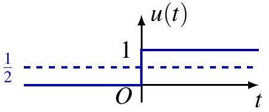
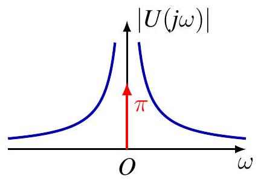
\[ \operatorname{sgn}(t)= \begin{cases}1, & t>0 \\ -1 & t<0\end{cases} \]
由于 \(\operatorname{sgn}=2 u-1\),
\[ \mathcal{F}\{\operatorname{sgn}\}(j \omega)=2 U(j \omega)-2 \pi \delta(\omega)=\frac{2}{j \omega} \]
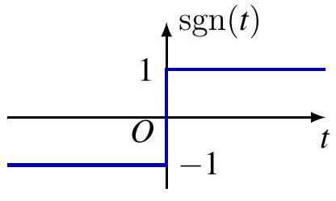
积分
例. 单位斜坡函数 \(u_{-2}(t)=t u(t)\)
\[ u_{-2}(t)=\int_{-\infty}^{t} u(\tau) d \tau \]
积分性质（积分 property）建议 \(\mathcal{F} \{u_{-2}\}(j\omega) = \frac{1}{j\omega}U(j\omega) + \pi U(0)\delta(\omega)\)。 代入阶跃函数 \(u(t)\) 的变换 \(U(j\omega) = \frac{1}{j\omega} + \pi\delta(\omega)\)，可得：
\[\mathcal{F} \{u_{-2}\}(j\omega) = -\frac{1}{\omega^2} + \frac{\pi}{j\omega}\delta(\omega) + \pi U(0)\delta(\omega)\]
遇到的问题：定义不明确
但是，\(U(0) = \frac{1}{j0} + \pi\delta(0)\) 是什么？\(\frac{\pi}{j\omega}\delta(\omega)\) 又是什么？ 这些在数学上定义不明确（Not well-defined）！
因此，积分性质在此处不适用！
正确结果与经验法则
我们将看到： \[\mathcal{F} \{u_{-2}\} = -\frac{1}{\omega^2} + j\pi\delta'(\omega)\]
经验法则（Rule of thumb）： 积分性质仅在公式定义明确（Well-defined）的情况下才适用。
例 \(x(t)=\left(1-\frac{2|t|}{T}\right)\left[u\left(t+\frac{T}{2}\right)-u\left(t-\frac{T}{2}\right)\right]\)
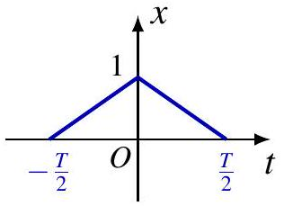
\(X_{2}(j \omega)=\frac{2}{T}\left[e^{j \frac{\omega T}{2}}-2+e^{-j \frac{\omega T}{2}}\right]=-\frac{8}{T} \sin ^{2}\left(\frac{\omega T}{4}\right)\) \(X_{1}(j \omega)=\frac{X_{2}(j \omega)}{j \omega}+\pi X_{2}(0) \delta(\omega)=-\frac{8 \sin ^{2}\left(\frac{\omega T}{4}\right)}{j \omega T}\)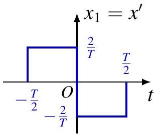
\(X(j \omega)=\frac{X_{1}(j \omega)}{j \omega}+\pi X_{1}(0) \delta(\omega)=\frac{8 \sin ^{2}\left(\frac{\omega T}{4}\right)}{\omega^{2} T}\)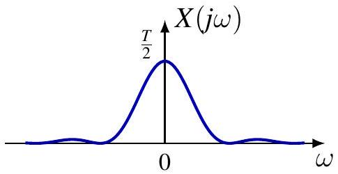
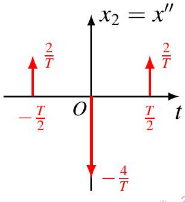
20/32
例: 符号函数 sgn
\[ x(t)=\operatorname{sgn}(t) \stackrel{\mathcal{F}}{\longleftrightarrow} X(j \omega)=\frac{2}{j \omega} \]
广义函数（分布）的理解
- \(x\) 和 \(X\) 均不属于 \(L_1(\mathbb{R})\) 空间，上述内容应在广义函数（分布）的意义下进行解释，即： \[(X, \phi) = (x, \mathcal{F}\{\phi\}), \quad \forall \phi \in \mathcal{S}\] 或者通过逼近序列 \(x_n \to x\) 来定义： \[(X, \phi) = \lim_{n} (X_n, \phi), \quad \forall \phi \in \mathcal{S}\]
柯西主值 (Cauchy Principal Value)
- 由于 \(\frac{2}{j\omega}\) 在 \(\omega = 0\) 处不可积，因此 \(X\) 应被解释为主值，通常记作 \(X(j\omega) = \text{pv} \left( \frac{2}{j\omega} \right)\)，即： \[(X, \phi) = \int_{\mathbb{R}} \text{pv} \left( \frac{2}{j\omega} \right) \phi(\omega) d\omega \triangleq \lim_{\epsilon \to 0} \int_{|\omega| \ge \epsilon} \frac{2}{j\omega} \phi(\omega) d\omega\]
例: 符号函数 sgn
断言（Claim）：下方的柯西主值定义是定义明确的（well-defined）：
\[ \int_{\mathbb{R}} \text{pv} \left( \frac{1}{\omega} \right) \phi(\omega) d\omega \triangleq \lim_{\epsilon \to 0} \int_{|\omega| \ge \epsilon} \frac{1}{\omega} \phi(\omega) d\omega \]
证明：
- \(\int_{|\omega| \ge 1} \frac{1}{\omega} \phi(\omega) d\omega\) 是定义明确的，因为测试函数 \(\phi\) 是快速递减的（rapidly decreasing）。
- 由于在对称区间上的积分 \(\int_{1 \ge |\omega| \ge \epsilon} \frac{1}{\omega} d\omega = 0\)（利用 \(1/\omega\) 的奇对称性），我们可以写出：
\[ \int_{1 \ge |\omega| \ge \epsilon} \frac{1}{\omega} \phi(\omega) d\omega = \int_{1 \ge |\omega| \ge \epsilon} \frac{\phi(\omega) - \phi(0)}{\omega} d\omega \]
根据中值定理（Intermediate Value Theorem / Mean Value Theorem），存在 \(\xi\) 使得： \[\left| \frac{\phi(\omega) - \phi(0)}{\omega} \right| = |\phi'(\xi)| \le \|\phi\|_{0,1}\]
因此，我们可以得到以下估计：
\[ \left| \int_{1 \ge |\omega| \ge \epsilon} \frac{1}{\omega} \phi(\omega) d\omega \right| = \int_{1 \ge |\omega| \ge \epsilon} \left| \frac{\phi(\omega) - \phi(0)}{\omega} \right| d\omega \le 2 \|\phi\|_{0,1} \]
例: 符号函数 sgn
以下是针对您上传的关于符号函数 (sgn) 傅里叶变换证明页面的翻译，并以 .qmd (Quarto Markdown) 格式输出：
Code snippet
title: “符号函数傅里叶变换的证明” format: html —
断言 (Claim)： \[\mathcal{F}\{\text{sgn}\}(j\omega) = \text{pv} \left( \frac{2}{j\omega} \right)\]
证明： 令 \(x_a(t) = \text{sgn}(t)e^{-a|t|}\)，其中 \(a > 0\)。 当 \(a \to 0\) 时，\(x_a \to x\) 在逐点意义及广义函数意义下均成立（将极限移至积分符号内是合法的）：
\[\lim_{a \to 0} \int_{\mathbb{R}} x_a(t)\phi(t) = \int_{\mathbb{R}} \lim_{a \to 0} x_a(t)\phi(t) = \int_{\mathbb{R}} x(t)\phi(t)dt\]
回顾 (Recall)： \[X_a(j\omega) = \frac{-2j\omega}{a^2 + \omega^2}\]
对于 \(\omega \neq 0\)，当 \(a \to 0\) 时，\(X_a(j\omega) \to \frac{2}{j\omega}\) 在逐点意义下成立。但我们需要证明：
\[\int_{\mathbb{R}} X_a(j\omega)\phi(\omega)d\omega \to \int_{\mathbb{R}} \text{pv} \left( \frac{2}{j\omega} \right) \phi(\omega)d\omega\]
例: 符号函数 sgn
*断言 (Claim)**：
\[ \lim_{a \to 0} \int_{\mathbb{R}} \frac{\omega}{a^2 + \omega^2} \phi(\omega) d\omega = \lim_{\epsilon \to 0} \int_{|\omega| \ge \epsilon} \frac{1}{\omega} \phi(\omega) d\omega \]
证明：
由于 \(\frac{\omega}{a^2 + \omega^2} \phi(\omega) \in L_1(\mathbb{R})\)，
\[ \int_{\mathbb{R}} \frac{\omega}{a^2 + \omega^2} \phi(\omega) d\omega = \lim_{\epsilon \to 0} \int_{|\omega| \ge \epsilon} \frac{\omega}{a^2 + \omega^2} \phi(\omega) d\omega \]
需要证明：
\(\lim_{a \to 0} \lim_{\epsilon \to 0} |J| = 0\)，其中：
\[ J = \int_{|\omega| \ge \epsilon} \left( \frac{\omega}{a^2 + \omega^2} - \frac{1}{\omega} \right) \phi(\omega) d\omega = \int_{|\omega| \ge \epsilon} \frac{-a^2}{\omega (a^2 + \omega^2)} \phi(\omega) d\omega \]
例: 符号函数 sgn
证明（续）。利用 \(0 = \int_{|\omega| \ge \epsilon} \frac{-a^2}{\omega(a^2 + \omega^2)} d\omega\)，我们得到：
\[J = \int_{|\omega| \ge \epsilon} \frac{-a^2}{a^2 + \omega^2} \cdot \frac{\phi(\omega) - \phi(0)}{\omega} d\omega\]
根据中值定理，\(\left| \frac{\phi(\omega) - \phi(0)}{\omega} \right| = |\phi'(\xi)| \le \|\phi\|_{0,1}\)。
那么误差项 \(J\) 的绝对值满足：
\[ \begin{aligned} |J| &\le \int_{|\omega| \ge \epsilon} \left| \frac{-a^2}{a^2 + \omega^2} \cdot \frac{\phi(\omega) - \phi(0)}{\omega} \right| d\omega \le \int_{|\omega| \ge \epsilon} \frac{a^2}{a^2 + \omega^2} \|\phi\|_{0,1} d\omega \\ &\le \int_{\mathbb{R}} \frac{a^2}{a^2 + \omega^2} \|\phi\|_{0,1} d\omega = a\pi \|\phi\|_{0,1} \end{aligned} \]
因此：
\[\lim_{a \to 0} \lim_{\epsilon \to 0} |J| = 0\]
例: 单位阶跃函数
\[ u(t) \stackrel{\mathcal{F}}{\longleftrightarrow} U(j \omega)=\frac{1}{j \omega}+\pi \delta(\omega) \]
NB. More precisely, \(U(j \omega)=\mathrm{pv}\left(\frac{1}{j \omega}\right)+\pi \delta(\omega)\) 证明。 Note \(u(t)=\frac{1}{2} \operatorname{sgn}(t)+\frac{1}{2}\). By linearity
\[ U(j \omega)=\frac{1}{2} \mathcal{F}\{\operatorname{sgn}\}(j \omega)+\frac{1}{2} \mathcal{F}\{1\}(j \omega)=\frac{1}{j \omega}+\pi \delta(\omega) \]
Remark. Can use approximation approach but with caution.
- Let \(x_{a}(t)=e^{-a t} u(t)\) for \(a>0\). Note \(x_{a} \rightarrow u\) pointwise and in distribution as \(a \rightarrow 0\).
- For \(\omega \neq 0, X_{a}(j \omega)=\frac{1}{a+j \omega} \rightarrow \frac{1}{j \omega}\) pointwise as \(a \downarrow 0\).
- Tempting to conclude \(U(j \omega)=\frac{1}{j \omega}\).
- But need convergence in distribution !
对偶性
\[ \begin{aligned} \mathcal{F}\{f\}(\eta) & =\int_{\mathbb{R}} f(\xi) e^{-j \eta \xi} d \xi \\ \mathcal{F}^{-1}\{f\}(\eta) & =\frac{1}{2 \pi} \int_{\mathbb{R}} f(\xi) e^{j \eta \xi} d \xi \end{aligned} \]
Identical except for
- different signs in exponent of complex exponential
- constant factor \(\frac{1}{2 \pi}\)
\[ \mathcal{F}\{f\}(\eta)=\int_{\mathbb{R}} f(\xi) e^{-j \eta \xi} d \xi=\int_{\mathbb{R}} f(-\xi) e^{j \eta \xi} d \xi=\mathcal{F}^{-1}\{2 \pi R f\}(\eta) \]
对偶性
\[ f \stackrel{\mathcal{F}}{\longleftrightarrow} g \Longleftrightarrow g \stackrel{\mathcal{F}}{\Longleftrightarrow} 2 \pi R f \Longleftrightarrow R g \stackrel{\mathcal{F}}{\Longleftrightarrow} 2 \pi f \]
对偶性
\[ \begin{aligned} \mathcal{F}\{f\}(\eta) & =\int_{\mathbb{R}} f(\xi) e^{-j \eta \xi} d \xi \\ \mathcal{F}^{-1}\{f\}(\eta) & =\frac{1}{2 \pi} \int_{\mathbb{R}} f(\xi) e^{j \eta \xi} d \xi \end{aligned} \]
Identical except for
- different signs in exponent of complex exponential
- constant factor \(\frac{1}{2 \pi}\)
\[ \overline{\mathcal{F}\{f\}}=\left(\int_{\mathbb{R}} f(\xi) e^{-j \eta \xi} d \xi\right)^{*}=\int_{\mathbb{R}} f^{*}(\xi) e^{j \eta \xi} d \xi=\mathcal{F}^{-1}\left\{2 \pi f^{*}\right\} \]
对偶性
\[ f \stackrel{\mathcal{F}}{\longleftrightarrow} g \quad \Longleftrightarrow \quad g^{*} \stackrel{\mathcal{F}}{\longleftrightarrow} 2 \pi f^{*} \]
对偶性
\[ u(t+a)-u(t-a) \stackrel{\mathcal{F}}{\longleftrightarrow} \frac{2 \sin (a \omega)}{\omega} \]
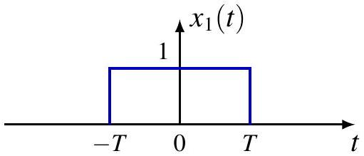
\[ \stackrel{\mathcal{F}}{\longmapsto} \]
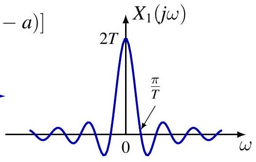
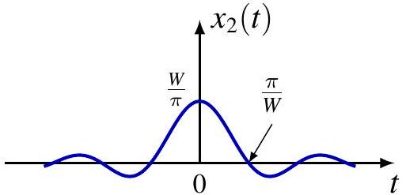
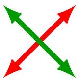
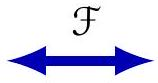
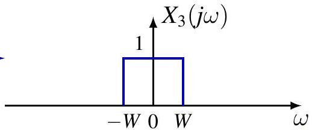
对偶性
例. \(x(t)=\frac{1}{t}\) (more precisely, \(\mathrm{pv}\left(\frac{1}{t}\right)\) ) Know
\[ \operatorname{sgn}(t) \stackrel{\mathcal{F}}{\longleftrightarrow} \frac{1}{j \omega} \]
By duality
\[ -\frac{1}{j t} \stackrel{\mathcal{F}}{\longleftrightarrow} 2 \pi \operatorname{sgn}(\omega) \]
- switch LHS and RHS, switch \(\omega\) and \(t\)
- do either of following (but not both)
- take complex conjugate of both sides
- substitute \(\omega \rightarrow-\omega\) or \(t \rightarrow-t\) (but not both)
- multiply RHS by \(2 \pi\)
By linearity
\[ \frac{1}{t} \stackrel{\mathcal{F}}{\longleftrightarrow}-j 2 \pi \operatorname{sgn}(\omega) \]
对偶性
例. \(x(t)=\frac{1}{1+t^{2}}\) Know
\[ e^{-|t|} \stackrel{\mathcal{F}}{\longleftrightarrow} \frac{2}{1+\omega^{2}} \]
By duality
\[ \frac{2}{1+t^{2}} \stackrel{\mathcal{F}}{\longleftrightarrow} 2 \pi e^{-|\omega|} \]
- switch LHS and RHS, switch \(\omega\) and \(t\)
- do either of following (but not both)
- take complex conjugate of both sides
- substitute \(\omega \rightarrow-\omega\) or \(t \rightarrow-t\) (but not both)
- multiply RHS by \(2 \pi\)
By linearity
\[ \frac{1}{1+t^{2}} \stackrel{\mathcal{F}}{\longleftrightarrow} \pi e^{-|\omega|} \]
对偶性
微分 in frequency
\[ -j t x(t) \stackrel{\mathcal{F}}{\longleftrightarrow} \frac{d X(j \omega)}{d \omega} \]
证明。 Differentiate under integral sign
\[ X(j \omega)=\int_{\mathbb{R}} x(t) e^{-j \omega t} d t \Longrightarrow \frac{d X(j \omega)}{d \omega}=\int_{\mathbb{R}}(-j t) x(t) e^{-j \omega t} d t \]
例. Unit ramp function \(u_{-2}=t u(t)\)
\[ \mathcal{F}\left\{u_{-2}\right\}=j \mathcal{F}\{-j t u\}=j \frac{d U(j \omega)}{d \omega}=-\frac{1}{\omega^{2}}+j \pi \delta^{\prime}(\omega) \]
积分 in frequency
\[ -\frac{1}{j t} x(t)+\pi x(0) \delta(t) \stackrel{\mathcal{F}}{\longleftrightarrow} \int_{-\infty}^{\omega} X(j \lambda) d \lambda \]
帕塞瓦尔恒等式
定理。 If \(x \in L_{2}(\mathbb{R}), X=\mathcal{F}\{x\}\), then
\[ \|x\|_{2}^{2}=\frac{1}{2 \pi}\|X\|_{2}^{2}, \quad \text { or } \quad \int_{\mathbb{R}}|x(t)|^{2} d t=\frac{1}{2 \pi} \int_{\mathbb{R}}|X(j \omega)|^{2} d \omega \]
Note \(\omega\) is angular frequency and \(\frac{\omega}{2 \pi}\) is frequency
\[ \int_{\mathbb{R}}|x(t)|^{2} d t=\int_{\mathbb{R}}|X(j \omega)|^{2} \frac{d \omega}{2 \pi} \]
物理解释: Energy conservation
- \(|x(t)|^{2}\) power, or energy per unit time (second)
- \(|X(j \omega)|^{2}\) energy per unit frequency (Hertz) \(|X(j \omega)|^{2}\) called 能量密度谱
帕塞瓦尔恒等式
定理。 If \(x, y \in L_{2}(\mathbb{R}), X=\mathcal{F}\{x\}, Y=\mathcal{F}\{y\}\), then \(\langle x, y\rangle=\frac{1}{2 \pi}\langle X, Y\rangle, \quad\) or \(\quad \int_{\mathbb{R}} x(t) y^{*}(t) d t=\frac{1}{2 \pi} \int_{\mathbb{R}} X(j \omega) Y^{*}(j \omega) d \omega\) “证明。”
\[ \begin{aligned} \int_{\mathbb{R}} x(t) y^{*}(t) d t & =\int_{\mathbb{R}} x(t)\left(\frac{1}{2 \pi} \int_{R} Y(j \omega) e^{j \omega t} d \omega\right)^{*} d t \\ & =\frac{1}{2 \pi} \int_{\mathbb{R}} x(t) \int_{R} Y^{*}(j \omega) e^{-j \omega t} d \omega d t \\ & =\frac{1}{2 \pi} \int_{\mathbb{R}}\left(\int_{\mathbb{R}} x(t) e^{-j \omega t} d t\right) Y^{*}(j \omega) d \omega \\ & =\frac{1}{2 \pi} \int_{\mathbb{R}} X(j \omega) Y^{*}(j \omega) d \omega \end{aligned} \]
帕塞瓦尔恒等式
例.
\[ \frac{\sin (W t)}{\pi t} \stackrel{\mathcal{F}}{\longleftrightarrow} u(\omega+W)-u(\omega-W) \]
By Parseval’s identity
\[ \begin{aligned} \int_{\mathbb{R}} \frac{\sin ^{2}(W t)}{\pi^{2} t^{2}} d t & =\frac{1}{2 \pi} \int_{\mathbb{R}}|u(\omega+W)-u(\omega-W)|^{2} d \omega \\ & =\frac{1}{2 \pi} \int_{-W}^{W} d \omega \\ & =\frac{W}{\pi} \end{aligned} \]
目录
3. 卷积性质
For LTI systems \(T\) with
- 冲激响应 \(h\)
- 频率响应 \(H(j \omega)=\int_{\mathbb{R}} h(t) e^{-j \omega t} d t=\mathcal{F}\{h\}\) \(e^{j \omega t}\) is eigenfunction associated with eigenvalue \(H(j \omega)\)
\[ T\left(e^{j \omega t}\right)=H(j \omega) e^{\omega t} \]
Input \(x\) is linear superposition of \(e^{j \omega t}\)
\[ x(t)=\frac{1}{2 \pi} \int_{\mathbb{R}} X(j \omega) e^{j \omega t} d \omega \]
Output
\[ \begin{aligned} y(t) & =(x * h)(t)=T\left(\frac{1}{2 \pi} \int_{\mathbb{R}} X(j \omega) e^{j \omega t} d \omega\right) \\ & =\frac{1}{2 \pi} \int_{\mathbb{R}} X(j \omega) T\left(e^{j \omega t}\right) d \omega=\frac{1}{2 \pi} \int_{\mathbb{R}} X(j \omega) H(j \omega) e^{j \omega t} d \omega \end{aligned} \]
卷积性质
\[ \mathcal{F}\{x * y\}=\mathcal{F}\{x\} \mathcal{F}\{y\}, \quad \text { or } \quad(x * y)(t) \stackrel{\mathcal{F}}{\longleftrightarrow} X(j \omega) Y(j \omega) \]
convolution in time ⟹ multiplication in frequency “Proof”.
\[ \begin{aligned} \int_{\mathbb{R}}(x * y)(t) e^{-j \omega t} d t & =\int_{\mathbb{R}} \int_{\mathbb{R}} x(\tau) y(t-\tau) e^{-j \omega t} d \tau d t \\ & =\int_{\mathbb{R}} x(\tau)\left(\int_{\mathbb{R}} y(t-\tau) e^{-j \omega t} d t\right) d \tau \\ & =\int_{\mathbb{R}} x(\tau) Y(j \omega) e^{-j \omega \tau} d \tau \\ & =Y(j \omega) \int_{\mathbb{R}} x(\tau) e^{-j \omega \tau} d \tau \\ & =Y(j \omega) X(j \omega) \end{aligned} \]
例
\[ \begin{gathered} x(t)=\left(1-\frac{2|t|}{T}\right)\left[u\left(t+\frac{T}{2}\right)-u\left(t-\frac{T}{2}\right)\right] \\ x=x_{1} * x_{1} \end{gathered} \]
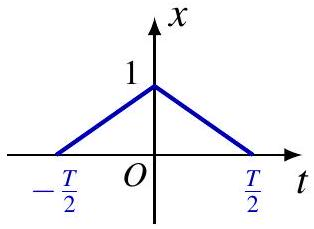
\[ \begin{gathered} X_{1}(j \omega)=\sqrt{\frac{2}{T}} \cdot \frac{2 \sin \left(\frac{\omega T}{4}\right)}{\omega} \\ X(j \omega)=X_{1}^{2}(j \omega)=\frac{8 \sin ^{2}\left(\frac{\omega T}{4}\right)}{\omega^{2} T} \end{gathered} \]
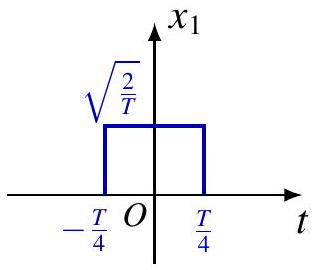
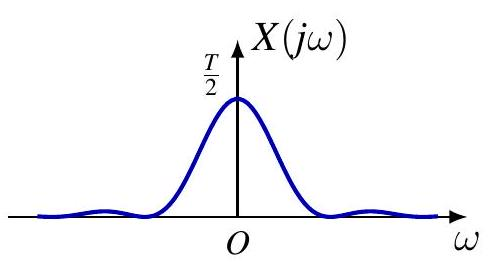
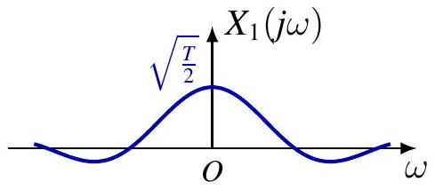
LTI 系统的频率响应
LTI system \(T\)
- fully characterized by 冲激响应 \(h\)
\[ y=T(x)=h * x \]
- also fully characterized by 频率响应 \(H=\mathcal{F}\{h\}\), if \(H\) is well-defined
- BIBO stable system, \(h \in L_{1}(\mathbb{R})\)
- other systems: identity \(h=\delta\), differentiator \(h=\delta^{\prime}, \ldots\)
Typically, convolution property implies
\[ Y=\mathcal{F}\{y\}=H X=\mathcal{F}\{h\} \mathcal{F}\{x\} \]
Instead of computing \(x * h\), can do
\[ y=\mathcal{F}^{-1}(\mathcal{F}\{h\} \mathcal{F}\{x\}) \]
LTI 系统的频率响应
| \(h(t)\) | \(H(j \omega)\) | |
|---|---|---|
| id | \(\delta(t)\) | 1 |
| \(\tau_{t_{0}}\) | \(\delta\left(t-t_{0}\right)\) | \(e^{-j \omega t_{0}}\) |
| \(\frac{d}{d t}\) | \(\delta^{\prime}(t)\) | \(j \omega\) |
| \(\int_{-\infty}^{t}\) | \(u(t)\) | \(\frac{1}{j \omega}+\pi \delta(\omega)\) |
| ideal lowpass | \(\frac{\sin \left(\omega_{c} t\right)}{\pi t}\) | \(u\left(\omega+\omega_{c}\right)-u\left(\omega-\omega_{c}\right)\) |
| 1st order lowpass | \(\frac{1}{\tau} e^{-t / \tau} u(t)\) | \(\frac{1}{1+j \tau \omega}\) |
例s
例. Differentiation property
\[ \begin{gathered} y=x^{\prime}=x * \delta^{\prime} \\ Y(j \omega)=X(j \omega) \mathcal{F}\left\{\delta^{\prime}\right\}=j \omega X(j \omega) \end{gathered} \]
例. Integration property
\[ \begin{gathered} y(t)=\int_{-\infty}^{t} x(\tau) d \tau=(x * u)(t) \\ Y(j \omega)=X(j \omega) U(j \omega)=X(j \omega)\left[\frac{1}{j \omega}+\pi \delta(\omega)\right]=\frac{1}{j \omega} X(j \omega)+\pi X(0) \delta(\omega) \end{gathered} \]
例
Unit ramp function \(u_{-2}(t)=t u(t)=(u * u)(t)\) Convolution property suggests
\[ \mathcal{F}\left\{u_{-2}\right\}(j \omega)=U^{2}(j \omega)=-\frac{1}{\omega^{2}}+\frac{2 \pi}{j \omega} \delta(\omega)+\pi^{2} \delta(\omega) \delta(\omega) \]
But \(\frac{\pi}{j \omega} \delta(\omega)\) and \(\delta(\omega) \delta(\omega)\) not well-defined! Know \(\mathcal{F}\left\{u_{-2}\right\}=-\frac{1}{\omega^{2}}+j \pi \delta^{\prime}(\omega)\) Convolution property not applicable here! Rule of thumb. Applicable when formula is well-defined
例
Response of LTI system with 冲激响应 \(h(t)=e^{-a t} u(t)\) to input \(x(t)=e^{-b t} u(t), a, b>0\)
方法 1. Direct convolution \(y=x * h\) 方法 2. Solve following ODE with initial rest condition
\[ y^{\prime}(t)+a y(t)=e^{-b t} u(t) \]
方法 3. Fourier transform.
\[ H(j \omega)=\frac{1}{a+j \omega}, X(j \omega)=\frac{1}{b+j \omega} \Longrightarrow Y(j \omega)=\frac{1}{(a+j \omega)(b+j \omega)} \]
If \(a \neq b, Y(j \omega)=\frac{1}{b-a}\left(\frac{1}{a+j \omega}-\frac{1}{b+j \omega}\right) \Longrightarrow y(t)=\frac{1}{b-a}\left(e^{-a t}-e^{-b t}\right) u(t)\) If \(a=b, Y(j \omega)=-\frac{d}{d a}\left(\frac{1}{a+j \omega}\right) \Longrightarrow y(t)=-\frac{d}{d a} e^{-a t} u(t)=t e^{-a t} u(t)\) Can also use \(Y(j \omega)=j \frac{d}{d \omega}\left(\frac{1}{a+j \omega}\right)\) and differentiation property
例
Response of LTI system with 冲激响应 \(h(t)=e^{-a t} u(t)\) to input \(x(t)=\cos \left(\omega_{0} t\right), a>0\). 频率响应
\[ H(j \omega)=\frac{1}{a+j \omega}=\frac{1}{\sqrt{a^{2}+\omega^{2}}} e^{-j \arctan \frac{\omega}{a}} \]
方法 1. Use eigenfunction property
\[ \begin{gathered} x(t)=\frac{1}{2} e^{j \omega_{0} t}+\frac{1}{2} e^{-j \omega_{0} t} \\ y(t)=\frac{1}{2} H\left(j \omega_{0}\right) e^{j \omega_{0} t}+\frac{1}{2} H\left(-j \omega_{0}\right) e^{-j \omega_{0} t}=\operatorname{Re} \frac{e^{j \omega_{0} t}}{a+j \omega_{0}} \\ =\frac{a \cos \left(\omega_{0} t\right)+\omega_{0} \sin \left(\omega_{0} t\right)}{a^{2}+\omega_{0}^{2}}=\frac{1}{\sqrt{a^{2}+\omega_{0}^{2}}} \cos \left(\omega_{0} t-\arctan \frac{\omega_{0}}{a}\right) \end{gathered} \]
例
Response of LTI system with 冲激响应 \(h(t)=e^{-a t} u(t)\) to input \(x(t)=\cos \left(\omega_{0} t\right)\).
频率响应
\[ H(j \omega)=\frac{1}{a+j \omega}=\frac{1}{\sqrt{a^{2}+\omega^{2}}} e^{-j \arctan \frac{\omega}{a}} \]
方法 2. Use Fourier transform of \(X\)
\[ \begin{gathered} X(j \omega)=\pi \delta\left(\omega-\omega_{0}\right)+\pi \delta\left(\omega+\omega_{0}\right) \\ Y(j \omega)=\pi H\left(j \omega_{0}\right) \delta\left(\omega-\omega_{0}\right)+\pi H\left(-j \omega_{0}\right) \delta\left(\omega+\omega_{0}\right) \\ y(t)=\frac{1}{2} H\left(j \omega_{0}\right) e^{j \omega_{0} t}+\frac{1}{2} H\left(-j \omega_{0}\right) e^{-j \omega_{0} t} \end{gathered} \]
例
Response of ideal lowpass filter with 冲激响应 \(h(t)\) to input \(x(t)\).
\[ h(t)=\frac{\sin \left(\omega_{c} t\right)}{\pi t}, \quad x(t)=\frac{\sin \left(\omega_{i} t\right)}{\pi t} \]
Fourier transforms
\[ \begin{aligned} & X(j \omega)=u\left(\omega+\omega_{i}\right)-u\left(\omega-\omega_{i}\right) \\ & H(j \omega)=u\left(\omega+\omega_{c}\right)-u\left(\omega-\omega_{c}\right) \end{aligned} \]
Use \(Y(j \omega)=X(j \omega) H(j \omega)\),
\[ Y(j \omega)=\left\{\begin{array}{ll} X(j \omega), & \text { if } \omega_{i} \leq \omega_{c} \\ H(j \omega), & \text { if } \omega_{i}>\omega_{c} \end{array} \Longrightarrow y(t)= \begin{cases}x(t), & \text { if } \omega_{i} \leq \omega_{c} \\ h(t), & \text { if } \omega_{i}>\omega_{c}\end{cases}\right. \]
NB. Convolution of two sinc is another sinc
例
Convolution of Gaussians is another Gaussian
\[ x_{i}(t)=\frac{1}{\sqrt{2 \pi \sigma_{i}^{2}}} \exp \left(-\frac{\left(t-\mu_{i}\right)^{2}}{2 \sigma_{i}^{2}}\right) \]
Fourier transform (complex conjugate of characteristic function)
\[ X_{i}(j \omega)=\exp \left(-i \mu_{i} \omega-\frac{\sigma_{i}^{2}}{2} \omega^{2}\right) \]
For \(y=x_{1} * x_{2}\),
\[ \begin{gathered} Y(j \omega)=X_{1}(j \omega) X_{2}(j \omega)=\exp \left(-i\left(\mu_{1}+\mu_{2}\right) \omega-\frac{\sigma_{1}^{2}+\sigma_{2}^{2}}{2} \omega^{2}\right) \\ y(t)=\frac{1}{\sqrt{2 \pi\left(\sigma_{1}^{2}+\sigma_{2}^{2}\right)}} \exp \left(-\frac{\left(t-\mu_{1}-\mu_{2}\right)^{2}}{2\left(\sigma_{1}^{2}+\sigma_{2}^{2}\right)}\right) \end{gathered} \]
系统连接
LTI systems in 串联系统
\[ y=\left(x * h_{1}\right) * h_{2}=x *\left(h_{1} * h_{2}\right)=\left(x * h_{2}\right) * h_{1} \]
\[ h=h_{1} * h_{2} \]
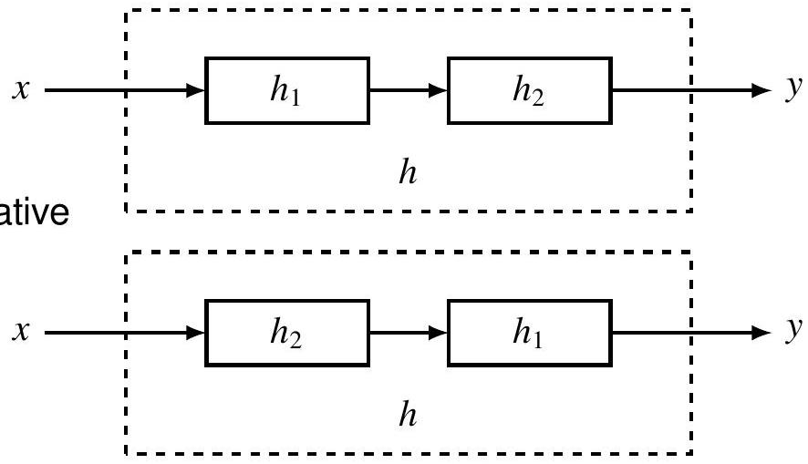
对 LTI 系统而言，处理顺序通常不影响结果
系统连接
LTI systems in 串联系统
\[ Y=\left(X H_{1}\right) H_{2}=X\left(H_{1} H_{2}\right)=\left(X H_{2}\right) H_{1} \]
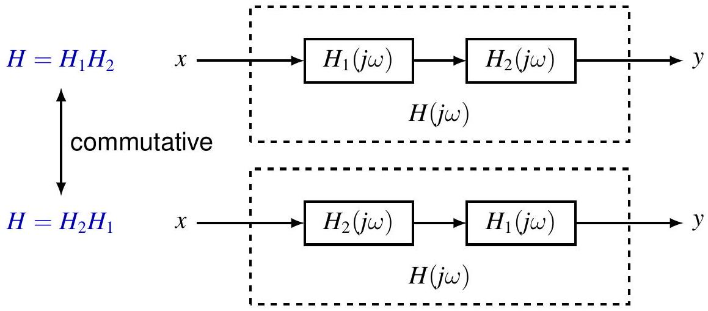
对 LTI 系统而言，处理顺序通常不影响结果
系统连接
LTI systems in systems in 并联系统
\[ h=h_{1}+h_{2} \]
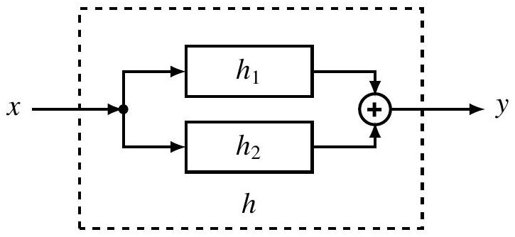
\[ H=H_{1}+H_{2} \]
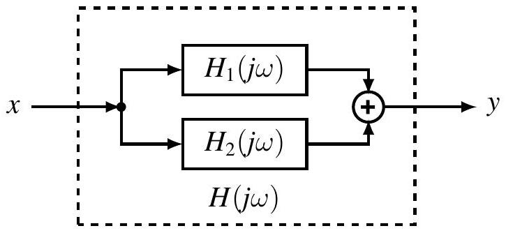
系统连接
LTI systems in systems in 反馈连接
\[ \begin{gathered} y=h_{1} *\left(x-h_{2} * y\right) \\ h=? \end{gathered} \]
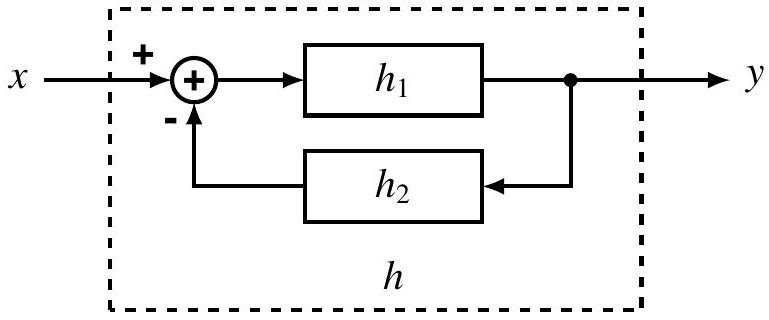
\[ \begin{aligned} Y & =H_{1} X-H_{1} H_{2} Y \\ H & =\frac{Y}{X}=\frac{H_{1}}{1+H_{1} H_{2}} \end{aligned} \]
目录
4. 乘积性质
卷积性质的对偶
\[ \mathcal{F}\{x y\}=\frac{1}{2 \pi} \mathcal{F}\{x\} * \mathcal{F}\{y\}, \text { or } x(t) y(t) \stackrel{\mathcal{F}}{\longleftrightarrow} \frac{1}{2 \pi} \int_{\mathbb{R}} X(j \theta) Y(j(\omega-\theta)) d \theta \]
时域相乘 ⟹ 频域卷积 证明。 Let \(Z(j \omega)=\frac{1}{2 \pi} \int_{\mathbb{R}} X(j \theta) Y(j(\omega-\theta)) d \theta\)
\[ \begin{aligned} \frac{1}{2 \pi} \int_{\mathbb{R}} Z(j \omega) e^{j \omega t} d \omega & =\frac{1}{2 \pi} \int_{\mathbb{R}} \frac{1}{2 \pi}\left(\int_{\mathbb{R}} X(j \theta) Y(j(\omega-\theta)) d \theta\right) e^{j \omega t} d \omega \\ & =\frac{1}{2 \pi} \int_{\mathbb{R}} X(j \theta) \frac{1}{2 \pi}\left(\int_{\mathbb{R}} Y(j(\omega-\theta)) e^{j \omega t} d \omega\right) d \theta \\ & =\frac{1}{2 \pi} \int_{\mathbb{R}} X(j \theta) y(t) e^{j \theta t} d \theta=x(t) y(t) \end{aligned} \]
例: 调制
Baseband signal \(x(t)\) Carrier
\[ \begin{aligned} & p(t)=\cos \left(\omega_{c} t\right) \\ & P(j \omega)=\pi \delta\left(\omega-\omega_{c}\right)+\pi \delta\left(\omega+\omega_{c}\right) \end{aligned} \]
Modulated signal
\[ \begin{aligned} & y(t)=x(t) p(t) \\ & Y(j \omega)=\frac{1}{2} X\left(j\left(\omega-\omega_{c}\right)\right)+\frac{1}{2} X\left(j\left(\omega+\omega_{c}\right)\right) \end{aligned} \]
例: 解调
Modulated signal \(y(t)\) Carrier
\[ \begin{aligned} & p(t)=\cos \left(\omega_{c} t\right) \\ & P(j \omega)=\pi \delta\left(\omega-\omega_{c}\right)+\pi \delta\left(\omega+\omega_{c}\right) \end{aligned} \]
解调
\[ \begin{aligned} & z(t)=y(t) p(t) \\ & \quad=\frac{1}{2} x(t)+\frac{1}{2} x(t) \cos \left(2 \omega_{c} t\right) \\ & R(j \omega)=Z(j \omega) H_{\text {lowpass }}(j \omega) \\ & r(t)=x(t) \end{aligned} \]
理想 AM 通信系统
例
\[ \begin{gathered} x(t)=\frac{\sin t \cdot \sin \frac{t}{2}}{\pi t^{2}}=\pi x_{1}(t) x_{2}(t) \\ x_{1}(t)=\frac{\sin t}{\pi t} \\ x_{2}(t)=\frac{\sin \frac{t}{2}}{\pi t} \\ X=\frac{1}{2} X_{1} * X_{2} \end{gathered} \]
目录
5. 变换性质和变换对列表
目录
6. 线性常系数微分方程描述的系统
线性常系数微分方程
频率响应 of LTI system described by
\[ \sum_{k=0}^{N} a_{k} \frac{d^{k} y}{d t^{k}}=\sum_{k=0}^{M} b_{k} \frac{d^{k} x}{d t^{k}} \]
方法 1. Use eigenfunction property
\[ x(t)=e^{j \omega t} \Longrightarrow y(t)=H(j \omega) e^{j \omega t} \]
Substitution into ODE yields
\[ \begin{gathered} \sum_{k=0}^{N} a_{k} H(j \omega)(j \omega)^{k} e^{j \omega t}=\sum_{k=0}^{M} b_{k}(j \omega)^{k} e^{j \omega t} \\ H(j \omega)=\frac{\sum_{k=0}^{M} b_{k}(j \omega)^{k}}{\sum_{k=0}^{N} a_{k}(j \omega)^{k}} \end{gathered} \]
线性常系数微分方程
方法 2. Take Fourier transform of both sides
\[ \mathcal{F}\left\{\sum_{k=0}^{N} a_{k} \frac{d^{k} y}{d t^{k}}\right\}=\mathcal{F}\left\{\sum_{k=0}^{M} b_{k} \frac{d^{k} x}{d t^{k}}\right\} \]
By linearity and differentiation property
\[ \sum_{k=0}^{N} a_{k}(j \omega)^{k} Y(j \omega)=\sum_{k=0}^{M} b_{k}(j \omega)^{k} X(j \omega) \]
By convolution property
\[ H(j \omega)=\frac{Y(j \omega)}{X(j \omega)}=\frac{\sum_{k=0}^{M} b_{k}(j \omega)^{k}}{\sum_{k=0}^{N} a_{k}(j \omega)^{k}} \]
频率响应 is rational function of \(j \omega\)
例
\[ y^{\prime \prime}+4 y^{\prime}+3 y=x^{\prime}+2 x \]
频率响应
\[ H(j \omega)=\frac{j \omega+2}{(j \omega)^{2}+4(j \omega)+3} \]
By partial fraction expansion
\[ H(j \omega)=\frac{j \omega+2}{(j \omega+1)(j \omega+3)}=\frac{1 / 2}{j \omega+1}+\frac{1 / 2}{j \omega+3} \]
Take inverse Fourier transform to find 冲激响应
\[ h(t)=\frac{1}{2} e^{-t} u(t)+\frac{1}{2} e^{-3 t} u(t) \]
例
\[ y^{\prime \prime}+4 y^{\prime}+3 y=x^{\prime}+2 x \]
Find zero-state response to \(x(t)=e^{-t} u(t)\)
\[ Y(j \omega)=H(j \omega) X(j \omega)=\frac{j \omega+2}{(j \omega+1)(j \omega+3)} \cdot \frac{1}{j \omega+1}=\frac{j \omega+2}{(j \omega+1)^{2}(j \omega+3)} \]
By partial fraction expansion
\[ Y(j \omega)=\frac{1 / 4}{j \omega+1}+\frac{1 / 2}{(j \omega+1)^{2}}-\frac{1 / 4}{j \omega+3} \]
Take inverse Fourier transform to find zero-state response
\[ y(t)=\left(\frac{1}{4} e^{-t}+\frac{1}{2} t e^{-t}-\frac{1}{4} e^{-3 t}\right) u(t) \]
Inverse Fourier Transform of \(\frac{1}{(j \omega+a)^{n}}\)
Recall
\[ e^{-a t} u(t) \stackrel{\mathcal{F}}{\longleftrightarrow} \frac{1}{a+j \omega} \]
Note
\[ j^{n-1} \frac{d^{n-1}}{d \omega^{n-1}}\left(\frac{1}{a+j \omega}\right)=\left(j \frac{d}{d \omega}\right)^{n-1}\left(\frac{1}{a+j \omega}\right)=\frac{(n-1)!}{(a+j \omega)^{n}} \]
Recall frequency differentiation property
\[ t x(t) \stackrel{\mathcal{F}}{\longleftrightarrow} j \frac{d}{d \omega} X(j \omega) \]
Applying it \(n-1\) times yields
\[ \frac{t^{n-1}}{(n-1)!} e^{-a t} u(t) \stackrel{\mathcal{F}}{\longleftrightarrow} \frac{1}{(a+j \omega)^{n}} \]
部分分式展开
Rational function
\[ R(s)=\frac{P(s)}{Q(s)}=\frac{\sum_{k=0}^{M} b_{k} s^{k}}{\sum_{k=0}^{N} a_{k} s^{k}} \]
Proper rational function if \(M<N\) Improper rational function can be rewritten as sum of polynomial and proper rational function by long division
\[ R(s)=P_{0}(s)+\frac{P_{1}(s)}{Q(s)} \]
where \(\operatorname{deg} P_{1}<\operatorname{deg} Q\) 例.
\[ \frac{s^{3}+5 s^{2}+8 s+5}{s^{2}+4 s+3}=s+1+\frac{s+2}{s^{2}+4 s+3} \]
部分分式展开
例 (long division).
\[ \frac{s^{3}+5 s^{2}+8 s+5}{s^{2}+4 s+3}=s+1+\frac{s+2}{s^{2}+4 s+3} \]
\[ \begin{aligned} \left.s^{2}+4 s+3\right) & s+1 \\ \cline { 2 - 2 } \begin{array}{r} s^{3}+5 s^{2}+8 s+5 \\ -s^{3}-4 s^{2}-3 s \\ s^{2}+5 s+5 \\ -s^{2}-4 s-3 \\ s+2 \end{array} & \\ \hline & \end{aligned} \]
部分分式展开
Consider proper rational function \(R(s)=P(s) / Q(s)\) Denominator \(Q(s)\) has \(r\) distinct roots \(a_{1}, \ldots, a_{r} \in \mathbb{C}\) and factorization
\[ Q(s)=\prod_{i=1}^{r}\left(s-a_{i}\right)^{N_{i}} \]
\(R(s)\) has following partial fraction expansion
\[ R(s)=\sum_{i=1}^{r} \sum_{k_{i}=1}^{N_{i}} \frac{A_{i, k_{i}}}{\left(s-a_{i}\right)^{k_{i}}} \]
Find coefficients by
- reducing to common denominator
- comparing coefficients of numerators
部分分式展开
例.
\[ R(s)=\frac{s+2}{(s+1)^{2}(s+3)}=\frac{A_{1,1}}{s+1}+\frac{A_{1,2}}{(s+1)^{2}}+\frac{A_{2,1}}{s+3} \]
RHS is
\[ \begin{aligned} & \frac{A_{1,1}(s+1)(s+3)+A_{1,2}(s+3)+A_{2,1}(s+1)^{2}}{(s+1)^{2}(s+3)} \\ & =\frac{\left(A_{1,1}+A_{2,1}\right) s^{2}+\left(4 A_{1,1}+A_{1,2}+2 A_{2,1}\right) s+\left(3 A_{1,1}+3 A_{1,2}+A_{2,1}\right)}{(s+1)^{2}(s+3)} \\ & \left\{\begin{array} { r l } { A _ { 1 , 1 } + A _ { 2 , 1 } } & { = 0 } \\ { 4 A _ { 1 , 1 } + A _ { 1 , 2 } + 2 A _ { 2 , 1 } } & { = 1 } \\ { 3 A _ { 1 , 1 } + 3 A _ { 1 , 2 } + A _ { 2 , 1 } } & { = 2 } \end{array} \Rightarrow \left\{\begin{array}{l} A_{1,1}=1 / 4 \\ A_{1,2}=1 / 2 \\ A_{2,1}=-1 / 4 \end{array}\right.\right. \end{aligned} \]
部分分式展开
\[ R(s)=\sum_{i=1}^{r} \sum_{k_{i}=1}^{N_{i}} \frac{A_{i, k_{i}}}{\left(s-a_{i}\right)^{k_{i}}} \]
Multiply both sides by \(\left(s-a_{j}\right)^{N_{j}}\),
\[ \left(s-a_{j}\right)^{N_{j}} R(s)=\sum_{k_{j}=1}^{N_{j}} A_{j, k_{j}}\left(s-a_{j}\right)^{N_{j}-k_{j}}+\left(s-a_{j}\right)^{N_{j}} R_{j}(s) \]
where \(R_{j}(s)=\sum_{i \neq j} \sum_{k_{i}=1}^{N_{i}} \frac{A_{i, k_{i}}}{\left(s-a_{i}\right)^{k_{i}}}\). For \(k<N_{j}\),
\[ \begin{aligned} \frac{d^{k}}{d s^{k}}\left[\left(s-a_{j}\right)^{N_{j}} R(s)\right] & =\sum_{k_{j}=0}^{N_{j}-k} A_{j, k_{j}} \frac{\left(N_{j}-k_{j}\right)!}{\left(N_{j}-k_{j}-k\right)!}\left(s-a_{j}\right)^{N_{j}-k_{j}-k} \\ & +\sum_{\ell=0}^{k}\binom{k}{\ell} \frac{N_{j}!}{\left(N_{j}-\ell\right)!}\left(s-a_{j}\right)^{N_{j}-\ell} R_{j}^{(\ell)}(s) \end{aligned} \]
部分分式展开
\[ \begin{aligned} \frac{d^{k}}{d s^{k}}\left[\left(s-a_{j}\right)^{N_{j}} R(s)\right] & =\sum_{k_{j}=0}^{N_{j}-k} A_{j, k_{j}} \frac{\left(N_{j}-k_{j}\right)!}{\left(N_{j}-k_{j}-k\right)!}\left(s-a_{j}\right)^{N_{j}-k_{j}-k} \\ & +\sum_{\ell=0}^{k}\binom{k}{\ell} \frac{N_{j}!}{\left(N_{j}-\ell\right)!}\left(s-a_{j}\right)^{N_{j}-\ell} R_{j}^{(\ell)}(s) \end{aligned} \]
Evaluating at \(s=a_{j}\),
\[ \left.\left[\frac{d^{k}}{d s^{k}}\left[\left(s-a_{j}\right)^{N_{j}} R(s)\right]\right]\right|_{s=a_{j}}=A_{j, N_{j}-k} k! \]
Replacing \(k\) by \(N_{j}-k\),
\[ A_{j, k}=\left.\frac{1}{\left(N_{j}-k\right)!}\left[\frac{d^{N_{j}-k}}{d s^{N_{j}-k}}\left[\left(s-a_{j}\right)^{N_{j}} R(s)\right]\right]\right|_{s=a_{j}} \]
部分分式展开
例.
\[ R(s)=\frac{s+2}{(s+1)^{2}(s+3)}=\frac{A_{1,1}}{s+1}+\frac{A_{1,2}}{(s+1)^{2}}+\frac{A_{2,1}}{s+3} \]
To find \(A_{2,1}\)
- Multiply both sides by \(s+3\),
\[ (s+3) R(s)=\frac{s+2}{(s+1)^{2}}=\frac{A_{1,1}(s+3)}{s+1}+\frac{A_{1,2}(s+3)}{(s+1)^{2}}+A_{2,1} \]
- Evaluate at \(s=-3\),
\[ A_{2,1}=\left.\frac{s+2}{(s+1)^{2}}\right|_{s=-3}=-\frac{1}{4} \]
部分分式展开
例 (cont’d).
\[ R(s)=\frac{s+2}{(s+1)^{2}(s+3)}=\frac{A_{1,1}}{s+1}+\frac{A_{1,2}}{(s+1)^{2}}+\frac{A_{2,1}}{s+3} \]
To find \(A_{1,2}\)
- Multiply both sides by \((s+1)^{2}\),
\[ (s+1)^{2} R(s)=\frac{s+2}{s+3}=A_{1,1}(s+1)+A_{1,2}+\frac{A_{2,1}(s+1)^{2}}{s+3} \]
2 . Evaluate at \(s=-1\),
\[ A_{1,2}=\left.\frac{s+2}{s+3}\right|_{s=-1}=\frac{1}{2} \]
部分分式展开
例 (cont’d).
\[ R(s)=\frac{s+2}{(s+1)^{2}(s+3)}=\frac{A_{1,1}}{s+1}+\frac{A_{1,2}}{(s+1)^{2}}+\frac{A_{2,1}}{s+3} \]
To find \(A_{1,1}\)
- Multiply both sides by \((s+1)^{2}\),
\[ (s+1)^{2} R(s)=\frac{s+2}{s+3}=A_{1,1}(s+1)+A_{1,2}+\frac{A_{2,1}(s+1)^{2}}{s+3} \]
- Take first derivative w.r.t. \(s\),
\[ \frac{d}{d s}\left(\frac{s+2}{s+3}\right)=\frac{1}{(s+3)^{2}}=A_{1,1}+\frac{d}{d s}\left(\frac{A_{2,1}(s+1)^{2}}{s+3}\right) \]
- Evaluate at \(s=-1\),
\[ A_{1,1}=\left.\frac{1}{(s+3)^{2}}\right|_{s=-1}=\frac{1}{4} \]
部分分式展开
例.
\[ R(s)=\frac{1}{(s+1)^{3}(s+3)}=\frac{A_{1,1}}{s+1}+\frac{A_{1,2}}{(s+1)^{2}}+\frac{A_{1,3}}{(s+1)^{3}}+\frac{A_{2,1}}{s+3} \]
- \(A_{2,1}\)
\[ \begin{gathered} (s+3) R(s)=\frac{1}{(s+1)^{3}}=\frac{A_{1,1}(s+3)}{s+1}+\frac{A_{1,2}(s+3)}{(s+1)^{2}}+\frac{A_{1,3}(s+3)}{(s+1)^{3}}+A_{2,1} \\ A_{2,1}=\left.\frac{1}{(s+1)^{3}}\right|_{s=-3}=-\frac{1}{8} \end{gathered} \]
- \(A_{1,3}\)
\[ \begin{gathered} (s+1)^{3} R(s)=\frac{1}{s+3}=A_{1,1}(s+1)^{2}+A_{1,2}(s+1)+A_{1,3}+\frac{A_{2,1}(s+1)^{3}}{s+3} \\ A_{1,3}=\left.\frac{1}{s+3}\right|_{s=-1}=\frac{1}{2} \end{gathered} \]
部分分式展开
例 (cont’d).
\[ R(s)=\frac{1}{(s+1)^{3}(s+3)}=\frac{A_{1,1}}{s+1}+\frac{A_{1,2}}{(s+1)^{2}}+\frac{A_{1,3}}{(s+1)^{3}}+\frac{A_{2,1}}{s+3} \]
- \(A_{1,2}\)
\[ \begin{gathered} (s+1)^{3} R(s)=\frac{1}{s+3}=A_{1,1}(s+1)^{2}+A_{1,2}(s+1)+A_{1,3}+\frac{A_{2,1}(s+1)^{3}}{s+3} \\ A_{1,2}=\left.\frac{d}{d s}\left(\frac{1}{s+3}\right)\right|_{s=-1}=-\left.\frac{1}{(s+3)^{2}}\right|_{s=-1}=-\frac{1}{4} \end{gathered} \]
- \(A_{1,1}\)
\[ 2 A_{1,1}=\left.\frac{d^{2}}{d s^{2}}\left(\frac{1}{s+3}\right)\right|_{s=-1}=\left.\frac{2}{(s+3)^{3}}\right|_{s=-1}=\frac{1}{8} \Longrightarrow A_{1,1}=\frac{1}{16} \]